旋转体、展开图与面积体积 由母线、半径、高或展开关系计算几何量；组合与挖空须辨明边界。
嘉定 · 第6题 ★☆☆☆☆ · 教师预估 本题资料或解析有待核事项，预览不可作为已审定成品。
已知圆锥的母线长为2，底面半径为1，则圆锥的侧面积为
考点： 圆锥侧面积公式。难度依据： 半径与母线直接代入
核查说明： 题干与解析已用于人工归类，尚未完成整题公式校净与独立数学终审。
展开答案与解析 【答案】2π.
【解析】
利用圆锥的侧面积公式即可得解.
因为圆锥的母线长为l = 2，底面半径为 ⌈ r = 1 \lceil r = 1 ⌈ r = 1
所以圆锥的侧面积为 π r l = 2 π \pi r l = 2 \pi π r l = 2 π
故答案为：2π.
奉贤 · 第11题 ★★☆☆☆ · 教师预估 本题资料或解析有待核事项，预览不可作为已审定成品。
上海市奉贤区奉城镇的古建筑万佛阁（图1）的屋檐下常系挂风铃（图2），风吹铃动，悦耳清脆，亦称惊鸟铃，一般一个惊鸟铃由铜铸造而成，由铃身和铃舌组成，为了知道一个惊鸟铃的质量，可以通过计算该惊鸟铃的体积，然后由物理学知识计算出该惊鸟铃的质量，因此我们需要作出一些合理的假设：ℑ O 1 O 3 = 20 c m \Im O _ { 1 } O _ { 3 } = 2 0 \mathrm { c m } ℑ O 1 O 3 = 20 cm O 2 O 3 = 18 c m O _ { 2 } O _ { 3 } = 1 8 \mathrm { { c m } } O 2 O 3 = 18 cm A B = 16 c m A B = 1 6 \mathrm { c m } A B = 16 cm . 9 g / c m 3 ) . 9 \mathrm { { g } / \mathrm { { c m } ^ { 3 } ) } } .9 g / cm 3 )
考点： 圆锥挖空体积与质量估算。难度依据： 作两个圆锥体积差后处理密度与单位
核查说明： 题干与解析已用于人工归类，尚未完成整题公式校净与独立数学终审。
展开答案与解析 【答案】120.
【解析】
利用锥体的体积公式可求得结果.
由题意可知，圆锥 ∣ O 1 O 3 \lvert O _ { 1 } O _ { 3 } ∣ O 1 O 3
圆锥 ; O 2 O 3 \mathrm { { ; } } O _ { 2 } O _ { 3 } ; O 2 O 3
因为 1100 × 1 3 × π × 8 2 × ( 20 − 18 ) × 8.9 ÷ 1000 ≈ 119.236 , 1 1 0 0 \times { \frac { 1 } { 3 } } \times \pi \times 8 ^ { 2 } \times ( 2 0 - 1 8 ) \times 8 . 9 \div 1 0 0 0 \approx 1 1 9 . 2 3 6 , 1100 × 3 1 × π × 8 2 × ( 20 − 18 ) × 8.9 ÷ 1000 ≈ 119.236 ,
所以，制作100个这样的惊鸟铃的铃身至少需要120千克铜.
故答案为：120.
宝山 · 第10题 ★★★☆☆ · 教师预估 …
考点： 正四面体旋转体的体积。难度依据： 涉及正四面体旋转体的体积；难度为教师预估，需结合原题条件复核。
核查说明： 依据现有底稿归类，尚未逐页校卷、公式校净或独立数学终审。
展开答案与解析 【答案】2π
【解析】
先求出四面体其中一个面的高，确定正四面体旋转后得到两个同底的圆锥，利用圆锥体积公式求解即可.
如图为棱长为2的正四面体，作 B D ⊥ A C , B D ∩ A C B D \bot A C , B D \cap A C B D ⊥ A C , B D ∩ A C
在 △ A B C \triangle A B C △ A BC ∣ A B ∣ = 2 , ∠ B A C = 6 0 ∘ , ∣ B D ∣ = ∣ A B ∣ ⋅ sin 6 0 ∘ = 3 , | A B | = 2 , \angle B A C = 6 0 ^ { \circ } , | B D | = | A B | \cdot \sin 6 0 ^ { \circ } = { \sqrt { 3 } } , ∣ A B ∣ = 2 , ∠ B A C = 6 0 ∘ , ∣ B D ∣ = ∣ A B ∣ ⋅ sin 6 0 ∘ = 3 ,
根据题意，正四面体旋转后得到两个同底的圆锥，
底面半径等于 ∣ B D ∣ = 3 | B D | = { \sqrt { 3 } } ∣ B D ∣ = 3 ∣ A C ∣ 2 = 1 { \frac { | A C | } { 2 } } = 1 2 ∣ A C ∣ = 1
所以旋转后几何体的体积为： V = 2 × 1 3 ⋅ π ⋅ ( 3 ) 2 = 2 π V = 2 \times { \frac { 1 } { 3 } } \cdot \pi \cdot \left( { \sqrt { 3 } } \right) ^ { 2 } = 2 \pi V = 2 × 3 1 ⋅ π ⋅ ( 3 ) 2 = 2 π
故答案为：2π
徐汇 · 第11题 ★★★☆☆ · 教师预估 本题资料或解析有待核事项，预览不可作为已审定成品。
徐汇滨江作为2024年上海国际鲜花展的三个主会场之一，吸引了广大市民前往观展并拍照留念.图中的花盆是种植鲜花的常见容器，它可视作两个圆台的组合体，上面圆台的上､下底面直径分别为
考点： 圆台展开扇形与母线。难度依据： 圆台展开扇形与母线；按所需步骤与推理量估计
核查说明： 题干与解析已用于人工归类，尚未完成整题公式校净与独立数学终审。；源解末行母线长度之和与前文数值不一致，需核原解和题图。；题干与解析已用于人工归类，尚未完成整题公式校净与独立数学终审。；源解末行母线长度之和与前文数值不一致，需核原解和题图。
展开答案与解析 【答案】5 17 5 \sqrt { 1 7 } 5 17
【解析】
设出圆台的母线长及底面半径，根据圆台的母线长公式 l = h 2 + ( r 1 − r 2 ) 2 l = \sqrt { h ^ { 2 } + \left( r _ { 1 } - r _ { 2 } \right) ^ { 2 } } l = h 2 + ( r 1 − r 2 ) 2
设上面圆台的母线长为 ∣ l 1 \boldsymbol { \lvert l _ { 1 } } ∣ l 1 1 r 1 = 15 c m 1 r _ { 1 } = 1 5 \mathrm { c m } 1 r 1 = 15 cm r 2 = 13 c m r _ { 2 } = 1 3 \mathrm { c m } r 2 = 13 cm h = 8 c m h = 8 \mathrm { c m } h = 8 cm
根据圆台的母线长公式l = h 2 + ( r 1 − r 2 ) 2 \sqrt { h ^ { 2 } + ( r _ { 1 } - r _ { 2 } ) ^ { 2 } } h 2 + ( r 1 − r 2 ) 2
l 1 = 8 2 + ( 15 − 13 ) 2 = 68 = 2 17 c m ;
l _ {1} = \sqrt {8 ^ {2} + (1 5 - 1 3) ^ {2}} = \sqrt {6 8} = 2 \sqrt {1 7} \mathrm{cm};
l 1 = 8 2 + ( 15 − 13 ) 2 = 68 = 2 17 cm ;
设下面圆台的母线长为l ，上面半径为 r 3 = 12 c m . r _ { 3 } = 1 2 \mathrm { { c m } } . r 3 = 12 cm . r 4 = 9 c m r _ { 4 } = 9 \mathrm { c m } r 4 = 9 cm
由于两个圆台侧面展开图的圆弧所对的圆心角相等，可以得到 r 1 − r 2 l 1 = r 3 − r 4 l 2 \frac { r _ { 1 } - r _ { 2 } } { l _ { 1 } } = \frac { r _ { 3 } - r _ { 4 } } { l _ { 2 } } l 1 r 1 − r 2 = l 2 r 3 − r 4
计算得到 ∣ l 2 = ( r 3 − r 4 ) l 1 r 1 − r 2 = ( 12 − 9 ) × 2 17 15 − 13 = 3 17 c m | l _ { 2 } = { \frac { ( r _ { 3 } - r _ { 4 } ) l _ { 1 } } { r _ { 1 } - r _ { 2 } } } = { \frac { ( 1 2 - 9 ) \times 2 { \sqrt { 1 7 } } } { 1 5 - 1 3 } } = 3 { \sqrt { 1 7 } } \mathrm { c m } ∣ l 2 = r 1 − r 2 ( r 3 − r 4 ) l 1 = 15 − 13 ( 12 − 9 ) × 2 17 = 3 17 cm
所以该花盆上､下两部分母线长的总和为 12 17 + 3 17 = 5 17 c m \scriptstyle 1 2 { \sqrt { 1 7 } } + 3 { \sqrt { 1 7 } } = 5 { \sqrt { 1 7 } } { \mathrm { c m } } 12 17 + 3 17 = 5 17 cm
故答案为： 5 17 5 \sqrt { 1 7 } 5 17
普陀 · 第8题 ★★☆☆☆ · 教师预估 本题资料或解析有待核事项，预览不可作为已审定成品。
若圆锥PO 的体积为 2 2 π 3 \frac { 2 { \sqrt { 2 } } \pi } { 3 } 3 2 2 π 1 3 \frac 1 3 3 1 PO 的表面积为
考点： 圆锥线面角体积与表面积；直角三角形中的余弦边比。难度依据： 先由夹角确定母线半径比例再用体积定尺度
核查说明： 题干与解析已用于人工归类，尚未完成整题公式校净与独立数学终审。
展开答案与解析 【解析】
由题意作图，根据线面角的定义，可得圆锥的母线与底面半径的等量关系，利用扇形面积公式以及圆的面积公式，可得答案.
由题意可作图如下：
在圆锥PO中，易知 P O ⊥ A B P O \bot A B PO ⊥ A B ∠ P B O \angle P B O ∠ PBO
由母线与底面所成的角的余弦值为 1 3 \frac 1 3 3 1 cos ∠ P B O = 1 3 \cos \angle P B O = \frac { 1 } { 3 } cos ∠ PBO = 3 1
在 R t △ P O B ♯ \mathrm { R t } \triangle P O B \sharp Rt △ POB ♯ O B P B = 1 3 { \frac { O B } { P B } } = { \frac { 1 } { 3 } } PB OB = 3 1 P B = 3 O B P B = 3 O B PB = 3 OB P O = 2 2 O B P O = 2 \sqrt { 2 } O B PO = 2 2 OB
圆锥PO的体积V = 1 3 ⋅ P O ⋅ O B 2 π = 2 2 3 O B 3 π = 2 2 π 3 \frac { 1 } { 3 } \cdot P O \cdot O B ^ { 2 } \pi = \frac { 2 \sqrt { 2 } } { 3 } O B ^ { 3 } \pi = \frac { 2 \sqrt { 2 } \pi } { 3 } 3 1 ⋅ PO ⋅ O B 2 π = 3 2 2 O B 3 π = 3 2 2 π O B = 1 O B = 1 OB = 1 P B = 3 P B = 3 PB = 3 ∣ C = 2 π ⋅ O B = 2 π \textstyle | C = 2 \pi \cdot O B = 2 \pi ∣ C = 2 π ⋅ OB = 2 π { S 1 = 1 2 ⋅ P B ⋅ C = 3 π \displaystyle { \left\{ S _ { 1 } = \frac { 1 } { 2 } \cdot P B \cdot C = 3 \pi \right. } { S 1 = 2 1 ⋅ PB ⋅ C = 3 π ∣ S 2 = π ⋅ O B 2 = π \begin{array} { r } { | S _ { 2 } = \pi \cdot O B ^ { 2 } = \pi } \end{array} ∣ S 2 = π ⋅ O B 2 = π S = S 1 + S 2 = 4 π . \begin{array} { r } { \mathbb { S } = S _ { 1 } + S _ { 2 } = 4 \pi . } \end{array} S = S 1 + S 2 = 4 π .
杨浦 · 第7题 ★★☆☆☆ · 教师预估 本题资料或解析有待核事项，预览不可作为已审定成品。
已知一个正四棱锥的每一条棱长都为2，则该四棱锥的体积为
考点： 正四棱锥高与体积。难度依据： 正四棱锥高与体积；按所需步骤与推理量估计
核查说明： 题干与解析已用于人工归类，尚未完成整题公式校净与独立数学终审。
展开答案与解析 【答案】4 2 3 \frac { 4 { \sqrt { 2 } } } { 3 } 3 4 2
【解析】
作出辅助线，求出正四棱锥的高，由锥体体积公式进行求解.
如图，正四棱锥P−ABCD，正方形ABCD的对角线相交于点O，连接PO，
则 P O ⊥ P O \bot PO ⊥
因为 B D ⊂ B D \subset B D ⊂ A B C D A B C D A BC D P O ⊥ B D P O \bot B D PO ⊥ B D
其中 B O = 1 2 B D = 1 2 2 2 + 2 2 = 2 , B O = { \frac { 1 } { 2 } } B D = { \frac { 1 } { 2 } } { \sqrt { 2 ^ { 2 } + 2 ^ { 2 } } } = { \sqrt { 2 } } , BO = 2 1 B D = 2 1 2 2 + 2 2 = 2 ,
故 O P = B P 2 − O B 2 = 2 , O P = \sqrt { B P ^ { 2 } - O B ^ { 2 } } = \sqrt { 2 } , OP = B P 2 − O B 2 = 2 ,
所以该四棱锥的体积为 1 3 A B ⋅ B C ⋅ O P = 4 2 3 { \frac { 1 } { 3 } } A B \cdot B C \cdot O P = { \frac { 4 { \sqrt { 2 } } } { 3 } } 3 1 A B ⋅ BC ⋅ OP = 3 4 2
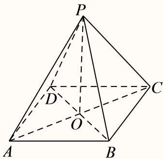
故答案为： 4 2 3 \frac { 4 { \sqrt { 2 } } } { 3 } 3 4 2
杨浦 · 第9题 ★★★☆☆ · 教师预估 本题资料或解析有待核事项，预览不可作为已审定成品。
将一个半径为1的球形石材加工成一个圆柱形摆件，则该圆柱形摆件侧面积的最大值为
考点： 球内接圆柱侧面积最值；基本不等式。难度依据： 球内接圆柱侧面积最值；基本不等式；按所需步骤与推理量估计
核查说明： 题干与解析已用于人工归类，尚未完成整题公式校净与独立数学终审。
展开答案与解析 【答案】2π.
【解析】
设圆柱形工件的高为h，底面半径为r，得到圆柱形工件的侧面积为 S = 2 π r h S = 2 \pi r h S = 2 π r h
设圆柱形工件的高为h，底面半径为r， h 2 4 + r 2 = 1 { \frac { h ^ { 2 } } { 4 } } + r ^ { 2 } = 1 4 h 2 + r 2 = 1
则圆柱形工件的侧面积为 S = 2 π r h = 2 π r 4 ( 1 − r 2 ) = 4 π r 2 ( 1 − r 2 ) ; S = 2 \pi r h = 2 \pi r \sqrt { 4 \left( 1 - r ^ { 2 } \right) } = 4 \pi \sqrt { r ^ { 2 } \left( 1 - r ^ { 2 } \right) } ; S = 2 π r h = 2 π r 4 ( 1 − r 2 ) = 4 π r 2 ( 1 − r 2 ) ;
又因为 1 = r 2 + ( 1 − r 2 ) ≥ 2 r 2 ( 1 − r 2 ) 1 = r ^ { 2 } + \left( 1 - r ^ { 2 } \right) \geq 2 { \sqrt { r ^ { 2 } \left( 1 - r ^ { 2 } \right) } } 1 = r 2 + ( 1 − r 2 ) ≥ 2 r 2 ( 1 − r 2 ) r 2 = ( 1 − r 2 ) , r = 2 2 r ^ { 2 } = \big ( 1 - r ^ { 2 } \big ) , r = \frac { \sqrt { 2 } } { 2 } r 2 = ( 1 − r 2 ) , r = 2 2
所以 S = 4 π r 2 ( 1 − r 2 ) ≤ 4 π × 1 2 = 2 π , S = 4 \pi { \sqrt { r ^ { 2 } \left( 1 - r ^ { 2 } \right) } } \leq 4 \pi \times { \frac { 1 } { 2 } } = 2 \pi , S = 4 π r 2 ( 1 − r 2 ) ≤ 4 π × 2 1 = 2 π ,
故答案为：2π.
松江 · 第6题 ★☆☆☆☆ · 教师预估 本题资料或解析有待核事项，预览不可作为已审定成品。
已知一个圆锥的底面半径为3，其侧面积为15π，则该圆锥的高为
考点： 圆锥侧面积与高。难度依据： 圆锥侧面积与高；按所需步骤与推理量估计
核查说明： 题干与解析已用于人工归类，尚未完成整题公式校净与独立数学终审。
展开答案与解析 【答案】4
【解析】
根据给定条件，利用侧面积公式求出母线长，进而求出圆锥的高.
圆锥的底面半径r = 3，设其母线长为l，则 π r l = 15 π \pi r l = 1 5 \pi π r l = 15 π
所以该圆锥的高 h = l 2 − r 2 = 5 2 − 3 2 = 4. h = { \sqrt { l ^ { 2 } - r ^ { 2 } } } = { \sqrt { 5 ^ { 2 } - 3 ^ { 2 } } } = 4 . h = l 2 − r 2 = 5 2 − 3 2 = 4.
故答案为：4
浦东 · 第18题 ★★★☆☆ · 教师预估 本题资料或解析有待核事项，预览不可作为已审定成品。
如图，已知AB为圆柱 O O 1 O O _ { 1 } O O 1 O A = 2 O A = 2 O A = 2 A A 1 A A _ { 1 } A A 1 ∠ B O P = 9 0 ∘ \angle B O P = 9 0 ^ { \circ } ∠ BOP = 9 0 ∘ A − P B A 1 A - P B A _ { 1 } A − PB A 1 ∠ B O P = 6 0 ∘ \angle B O P = 6 0 ^ { \circ } ∠ BOP = 6 0 ∘ A 1 B A P A _ { 1 } B { } A P A 1 B A P
考点： （1）圆柱中三棱锥体积；（2）异面直线角余弦。难度依据： 圆柱三棱锥体积与异面直线角；按所需步骤与推理量估计
核查说明： 题干与解析已用于人工归类，尚未完成整题公式校净与独立数学终审。；第（2）问异面直线名称间连接词丢失。；题干与解析已用于人工归类，尚未完成整题公式校净与独立数学终审。；第（2）问异面直线名称间连接词丢失。
展开答案与解析 【解析】
(1) 依题意， A A 1 ⊥ A A _ { 1 } \bot A A 1 ⊥ A P B : A P B { \mathrm { : } } A PB : ∠ B O P = 9 0 ∘ \angle B O P = 9 0 ^ { \circ } ∠ BOP = 9 0 ∘ S △ A P B = 1 2 A B ⋅ O P = 1 2 × 4 × 2 = 4 S _ { \triangle A P B } = \frac { 1 } { 2 } A B \cdot O P = \frac { 1 } { 2 } \times 4 \times 2 = 4 S △ A PB = 2 1 A B ⋅ OP = 2 1 × 4 × 2 = 4 A − P B A 1 A - P B A _ { 1 } A − PB A 1 V A − P B A 1 = V A 1 − P B A = 1 3 S △ A P B ⋅ A A 1 = 1 3 × 4 × 3 = 4. V _ { A - P B A _ { 1 } } = V _ { A _ { 1 } - P B A } = \frac { 1 } { 3 } S _ { \triangle A P B } \cdot A A _ { 1 } = \frac { 1 } { 3 } \times 4 \times 3 = 4 . V A − PB A 1 = V A 1 − PB A = 3 1 S △ A PB ⋅ A A 1 = 3 1 × 4 × 3 = 4.
(2) 过点P作圆柱 O O 1 O O _ { 1 } O O 1 P P 1 P P _ { 1 } P P 1 A 1 P 1 , B P : A _ { 1 } P _ { 1 } , B P _ { : } A 1 P 1 , B P :
则 P P 1 / / A A 1 , P P 1 = A A 1 P P _ { 1 } / / A A _ { 1 } , P P _ { 1 } = A A _ { 1 } P P 1 // A A 1 , P P 1 = A A 1 A P P 1 A 1 A P P _ { 1 } A _ { 1 } A P P 1 A 1 A 1 P 1 / / A P A _ { 1 } P _ { 1 } / / A P A 1 P 1 // A P
因此 ∠ P 1 A 1 B \angle P _ { 1 } A _ { 1 } B ∠ P 1 A 1 B A 1 B A _ { 1 } B A 1 B
由 ∠ B O P = 6 0 ∘ \angle B O P = 6 0 ^ { \circ } ∠ BOP = 6 0 ∘ ∠ A O P = 12 0 ∘ , A P = 2 O A cos 3 0 ∘ = 2 3 , P B = O B = 2 , \angle A O P = 1 2 0 ^ { \circ } , A P = 2 O A \cos 3 0 ^ { \circ } = 2 { \sqrt { 3 } } , P B = O B = 2 , ∠ A OP = 12 0 ∘ , A P = 2 O A cos 3 0 ∘ = 2 3 , PB = OB = 2 ,
则A1P1 = AP = 2√3，A1B = √AA2 + AB2 = √32 + 42 = 5，
由 P P 1 ⊥ P P _ { 1 \perp } P P 1 ⊥ A P B , A P B , A PB , P 1 B = P P 1 2 + P B 2 = 3 2 + 2 2 = 13 , P _ { 1 } B = { \sqrt { P P _ { 1 } ^ { 2 } + P B ^ { 2 } = { \sqrt { 3 ^ { 2 } + 2 ^ { 2 } } } } } = { \sqrt { 1 3 } } , P 1 B = P P 1 2 + P B 2 = 3 2 + 2 2 = 13 ,
在 △ A 1 P 1 B ∣ \triangle A _ { 1 } P _ { 1 } B ^ { \vert } △ A 1 P 1 B ∣ cos ∠ P 1 A 1 B = A 1 P 1 2 + A 1 B 2 − P 1 B 2 2 A 1 P 1 ⋅ A 1 B = 12 + 25 − 13 2 × 2 3 × 5 = 2 3 5 , \cos \angle P _ { 1 } A _ { 1 } B = { \frac { A _ { 1 } P _ { 1 } ^ { 2 } + A _ { 1 } B ^ { 2 } - P _ { 1 } B ^ { 2 } } { 2 A _ { 1 } P _ { 1 } \cdot A _ { 1 } B } } = { \frac { 1 2 + 2 5 - 1 3 } { 2 \times 2 { \sqrt { 3 } } \times 5 } } = { \frac { 2 { \sqrt { 3 } } } { 5 } } , cos ∠ P 1 A 1 B = 2 A 1 P 1 ⋅ A 1 B A 1 P 1 2 + A 1 B 2 − P 1 B 2 = 2 × 2 3 × 5 12 + 25 − 13 = 5 2 3 ,
所以异面直线 A 1 B l A _ { 1 } B _ { \ l } A 1 B l 2 3 5 \frac { 2 { \sqrt { 3 } } } { 5 } 5 2 3
虹口 · 第6题 ★☆☆☆☆ · 教师预估 若某圆锥的底面半径为1，高为1，则该圆锥的侧面积为 ．（结果保留π）
考点： 圆锥侧面积。难度依据： 涉及圆锥侧面积；难度为教师预估，需结合原题条件复核。
核查说明： 依据现有底稿归类，尚未逐页校卷、公式校净或独立数学终审。
展开答案与解析 【答案】2 π \sqrt { 2 } \pi 2 π
【解析】
首先求出母线，再由侧面积公式计算可得.
因为圆锥的底面半径r = 1，高h = 1，设母线为l(l > 0)，则 l = r 2 + h 2 = 2 l = { \sqrt { r ^ { 2 } + h ^ { 2 } } } = { \sqrt { 2 } } l = r 2 + h 2 = 2
所以该圆锥的侧面积为 π r l = 2 π \pi r l = \sqrt { 2 } \pi π r l = 2 π
故答案为： 2 π \sqrt { 2 } \pi 2 π
金山 · 第7题 ★★☆☆☆ · 教师预估 已知某圆锥的侧面展开图是圆心角为 2 π \sqrt { 2 } \pi 2 π
考点： 扇形展开与圆锥线面角。难度依据： 涉及扇形展开与圆锥线面角；难度为教师预估，需结合原题条件复核。
核查说明： 依据现有底稿归类，尚未逐页校卷、公式校净或独立数学终审。
展开答案与解析 【解析】
根据扇形弧长与圆锥底面周长关系列方程求底面半径，结合圆锥的结构特征求该圆锥的母线与底面所成角余弦值，即可确定大小.
令底面半径为r，则 2 π r = 2 2 π 2 \pi r = 2 \sqrt { 2 } \pi 2 π r = 2 2 π ⋅ r = 2 , \cdot r = { \sqrt { 2 } } , ⋅ r = 2 ,
所以该圆锥的母线与底面所成角的余弦值为 2 2 \frac { \sqrt { 2 } } { 2 } 2 2 π 4 \frac { \pi } { 4 } 4 π
π 4
\frac {\pi}{4}
4 π
金山 · 第15题 ★★★☆☆ · 教师预估 古希腊数学家阿波罗尼奥斯用不同的平面截同一圆锥，得到了圆锥曲线，其中的一种如图所示．用过M点且垂直于圆锥底面的平面截两个全等的对顶圆锥得到双曲线的一部分，已知高 P O = 2 P O = 2 PO = 2 E F ⊥ A B E F \bot A B EF ⊥ A B
A. 5 6 \frac { 5 } { 6 } 6 5
B. 4 5 \frac { 4 } { 5 } 5 4
C. 3 4 \frac 3 4 4 3
D. 3 5 \frac { 3 } { 5 } 5 3
考点： 圆锥截面双曲线渐近线夹角。难度依据： 涉及圆锥截面双曲线渐近线夹角；难度为教师预估，需结合原题条件复核。
核查说明： 依据现有底稿归类，尚未逐页校卷、公式校净或独立数学终审。
展开答案与解析 【答案】D
【解析】
令双曲线为 y 2 a 2 − x 2 b 2 = 1 { \frac { y ^ { 2 } } { a ^ { 2 } } } - { \frac { x ^ { 2 } } { b ^ { 2 } } } = 1 a 2 y 2 − b 2 x 2 = 1 tan θ = 4 3 \tan \theta = { \frac { 4 } { 3 } } tan θ = 3 4
如下图建系，令双曲线为 y 2 a 2 − x 2 b 2 = 1 { \frac { y ^ { 2 } } { a ^ { 2 } } } - { \frac { x ^ { 2 } } { b ^ { 2 } } } = 1 a 2 y 2 − b 2 x 2 = 1 ∣ O P ∣ = 2 | O P | = 2 ∣ OP ∣ = 2 y M = − 1 , a = 1 y _ { M } = - 1 , ~ a = 1 y M = − 1 , a = 1
如图， ∣ O H ∣ = 2 , ∣ O E ∣ = 4 | O H | = 2 , | O E | = 4 ∣ O H ∣ = 2 , ∣ OE ∣ = 4 H E ∣ = ∣ H F ∣ = 2 3 H E | = | H F | = 2 { \sqrt { 3 } } H E ∣ = ∣ H F ∣ = 2 3 F ( 2 3 , − 2 ) F \left( 2 { \sqrt { 3 } } , - 2 \right) F ( 2 3 , − 2 )
将F 代入 ⋅ y 2 − x 2 b 2 = 1 \cdot y ^ { 2 } - { \frac { x ^ { 2 } } { b ^ { 2 } } } = 1 ⋅ y 2 − b 2 x 2 = 1 4 − 12 b 2 = 1 4 - { \frac { 1 2 } { b ^ { 2 } } } = 1 4 − b 2 12 = 1 b 2 = 4 b ^ { 2 } = 4 b 2 = 4 y = ± 1 2 x y = \pm \frac { 1 } { 2 } x y = ± 2 1 x
若它们的夹角为θ，且 tan θ 2 = 1 2 \tan { \frac { \theta } { 2 } } = { \frac { 1 } { 2 } } tan 2 θ = 2 1 tan θ = 2 tan θ 2 1 − tan 2 θ 2 = 4 3 \tan \theta = { \frac { 2 \tan { \frac { \theta } { 2 } } } { 1 - \tan ^ { 2 } { \frac { \theta } { 2 } } } } = { \frac { 4 } { 3 } } tan θ = 1 − t a n 2 2 θ 2 t a n 2 θ = 3 4 cos θ = 3 5 \cos \theta = { \frac { 3 } { 5 } } cos θ = 5 3
故选：D
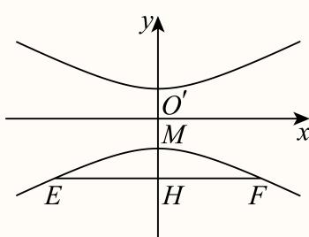
长宁 · 第2题 ★☆☆☆☆ · 教师预估 已知圆锥的底面半径为1，母线长为2，则该圆锥的体积是 （结果保留π）
考点： 母线、半径求高及体积。难度依据： 圆锥高与体积；母线、半径求高及体积
展开答案与解析 【答案】3 3 π { \frac { \sqrt { 3 } } { 3 } } \pi 3 3 π
【解析】
做轴截面，根据母线与底面半径求出圆锥的高，计算体积即可.
如下图做出轴截面：
h = √l2 − r2 = √3
代入圆锥体积公式： V = 1 3 π r 2 h = 3 3 π V = { \frac { 1 } { 3 } } \pi r ^ { 2 } h = { \frac { \sqrt { 3 } } { 3 } } \pi V = 3 1 π r 2 h = 3 3 π
故答案为： 3 3 π { \frac { \sqrt { 3 } } { 3 } } \pi 3 3 π
闵行 · 第5题 ★☆☆☆☆ · 教师预估 已知圆锥的高为8，底面半径为6，则该圆锥的侧面积为
考点： 求母线并代入侧面积公式。难度依据： 圆锥侧面积；求母线并代入侧面积公式
展开答案与解析 【答案】60π.
【解析】
根据勾股定理求出母线长，再根据圆锥的侧面积公式求解即可.
因为圆锥的高为8，底面半径为r = 6，
所以圆锥的母线长为 ! l = 8 2 + 6 2 = 10 ! l = { \sqrt { 8 ^ { 2 } + 6 ^ { 2 } } } = 1 0 ! l = 8 2 + 6 2 = 10
则圆锥的侧面积 ! S = π r l = π × 6 × 10 = 60 π ! S = \pi r l = \pi \times 6 \times 1 0 = 6 0 \pi ! S = π r l = π × 6 × 10 = 60 π
故答案为：60π.
青浦 · 第8题 ★★☆☆☆ · 教师预估 本题资料或解析有待核事项，预览不可作为已审定成品。
已知圆柱M的底面半径为3，高为 3 , { \sqrt { 3 } } , 3 ,
考点： 圆柱圆锥等体积与母线约束。难度依据： 由圆锥直径等母线先确定高半径比
核查说明： 题干与解析已用于人工归类，尚未完成整题公式校净与独立数学终审。
展开答案与解析 【答案】3
【解析】
求出圆柱M的体积，设圆锥N的底面半径为r，求出圆锥的高为 3 r \sqrt { 3 } r 3 r
圆柱M的体积为 π ⋅ 3 2 × 3 = 9 3 π \pi \cdot 3 ^ { 2 } \times \sqrt { 3 } = 9 \sqrt { 3 } \pi π ⋅ 3 2 × 3 = 9 3 π
设圆锥N 的底面半径为r ，则母线长为2r ，故圆锥的高为 ( 2 r ) 2 − r 2 = 3 r { \sqrt { \left( 2 r \right) ^ { 2 } - r ^ { 2 } } } = { \sqrt { 3 } } r ( 2 r ) 2 − r 2 = 3 r
则 1 3 π ⋅ r 2 ⋅ 3 r = 3 3 π r 3 { \frac { 1 } { 3 } } \pi \cdot r ^ { 2 } \cdot { \sqrt { 3 } } r = { \frac { \sqrt { 3 } } { 3 } } \pi r ^ { 3 } 3 1 π ⋅ r 2 ⋅ 3 r = 3 3 π r 3 3 3 π r 3 = 9 3 π { \frac { \sqrt { 3 } } { 3 } } \pi r ^ { 3 } = 9 { \sqrt { 3 } } \pi 3 3 π r 3 = 9 3 π r = 3 \scriptstyle { \mathfrak { r } } = 3 r = 3
故圆锥N的底面半径为3.
故答案为：3
黄浦 · 第4题 ★☆☆☆☆ · 教师预估 若圆柱的底面半径与高均为1，则其侧面积为
考点： 侧面积公式。难度依据： 圆柱侧面积；侧面积公式
展开答案与解析 【答案】2π
【解析】
根据圆柱的侧面积公式直接计算可得.
由题意，圆柱的侧面积为： S = 2 π r h = 2 π S = 2 \pi r h = 2 \pi S = 2 π r h = 2 π
故答案为：2π
空间位置判定与综合证明 依据判定定理和中点构造证明平行垂直；保留体积计算等前置小问，区分给定角度与要求求角。
嘉定 · 第14题 ★★☆☆☆ · 教师预估 本题资料或解析有待核事项，预览不可作为已审定成品。
已知α,β是两个不同的平面，a，b是两条不同的直线，下列条件中，一定得到直线l⊥α的是（ ）
A. α ⊥ β , l / / β \alpha \perp \beta , l / / \beta α ⊥ β , l // β
B. l ⊥ a , a / / α l \perp a , a / / \alpha l ⊥ a , a // α
C. l / / a , a ⊥ α l / / a , a \bot \alpha l // a , a ⊥ α
D. l ⊥ a , l ⊥ b , a ⊂ α , b ⊂ α l \bot a , l \bot b , a \subset \alpha , b \subset \alpha l ⊥ a , l ⊥ b , a ⊂ α , b ⊂ α
考点： 线面垂直判定及反例辨析。难度依据： 区分平行传递与遗漏相交条件的伪判定
核查说明： 题干与解析已用于人工归类，尚未完成整题公式校净与独立数学终审。
展开答案与解析 【答案】C
【解析】
根据直线、平面的位置关系的判断可得结果.
对于A， α ⊥ β , l / / β , \alpha \perp \beta , l / / \beta , α ⊥ β , l // β , ⊂ α , \subset \alpha , ⊂ α ,
对于B， l ⊥ a , a / / α l \perp a , a / / \alpha l ⊥ a , a // α ⊂ α , \subset \alpha , ⊂ α ,
对于C， l / / a , a ⊥ α l / / a , a \bot \alpha l // a , a ⊥ α
对于D， l ⊥ a , l ⊥ b , a ⊂ α , b ⊂ α l \bot a , l \bot b , a \subset \alpha , b \subset \alpha l ⊥ a , l ⊥ b , a ⊂ α , b ⊂ α Ξ α \varXi \alpha Ξ α ⊂ α \subset \alpha ⊂ α
故选：C.
嘉定 · 第17题 ★★★☆☆ · 教师预估 本题资料或解析有待核事项，预览不可作为已审定成品。
如图所示，在三棱柱 A B C − A 1 B 1 C 1 A B C - A _ { 1 } B _ { 1 } C _ { 1 } A BC − A 1 B 1 C 1 A B = A C A B = A C A B = A C B B 1 C 1 C ⊥ B B _ { 1 } C _ { 1 } C \bot B B 1 C 1 C ⊥ A 1 C 1 A _ { 1 } C _ { 1 } A 1 C 1 △ A B C \triangle A B C △ A BC C C 1 = B C C C _ { 1 } = B C C C 1 = BC C C 1 C C _ { 1 } C C 1 6 0 ∘ 6 0 ^ { \circ } 6 0 ∘ A B C − A 1 B 1 C 1 A B C - A _ { 1 } B _ { 1 } C _ { 1 } A BC − A 1 B 1 C 1 E F / / E F / / EF // A A 1 B 1 B ⋅ A A _ { 1 } B _ { 1 } B _ { \cdot } A A 1 B 1 B ⋅
考点： （1）用线面角确定柱高并求体积；（2）辅助中点构造平行四边形证明线面平行。难度依据： （1）用线面角确定柱高并求体积；（2）辅助中点构造平行四边形证明线面平行
核查说明： 题干与解析已用于人工归类，尚未完成整题公式校净与独立数学终审。
展开答案与解析 【解析】
(1) 在三棱柱 A B C − A 1 B 1 C 1 A B C - A _ { 1 } B _ { 1 } C _ { 1 } A BC − A 1 B 1 C 1 B B 1 C 1 C ∩ ∓ ⊞ A B C = B C B B _ { 1 } C _ { 1 } C \cap \mp \boxed { \boxplus } A B C = B C B B 1 C 1 C ∩ ∓ ⊞ A BC = BC B B 1 C 1 C ⊥ ∓ ∄ H → A B C B B _ { 1 } C _ { 1 } C \bot \mp \nexists \overrightarrow { \mathbb { H } } A B C B B 1 C 1 C ⊥ ∓ ∄ H A BC C 1 C _ { 1 } C 1 A B C . A B C . A BC . B C − B C _ { - } B C − C 1 C _ { 1 } C 1 A B C . A B C . A BC . C 1 C _ { 1 } C 1 A B C A B C A BC C C 1 C C _ { 1 } C C 1 C C 1 C C _ { 1 } C C 1 A B C A B C A BC 6 0 ∘ 6 0 ^ { \circ } 6 0 ∘
因此 ∴ h = C C 1 sin 6 0 ∘ = 3 2 B C = 3 \therefore h = C C _ { 1 } \sin 6 0 ^ { \circ } = { \frac { \sqrt { 3 } } { 2 } } B C = { \sqrt { 3 } } \quad ∴ h = C C 1 sin 6 0 ∘ = 2 3 BC = 3 △ A B C \triangle A B C △ A BC S = 3 4 B C 2 = 3 S = { \frac { \sqrt { 3 } } { 4 } } B C ^ { 2 } = { \sqrt { 3 } } S = 4 3 B C 2 = 3 A B C − A 1 B 1 C 1 A B C - A _ { 1 } B _ { 1 } C _ { 1 } A BC − A 1 B 1 C 1 V = S h = 3 V = S h = 3 V = S h = 3
(2) 在三棱柱 A B C − A 1 B 1 C 1 A B C - A _ { 1 } B _ { 1 } C _ { 1 } A BC − A 1 B 1 C 1 A 1 B 1 A _ { 1 } B _ { 1 } A 1 B 1 F G F G FG
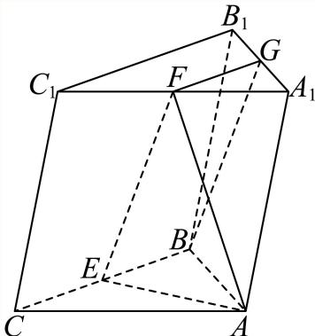
在 △ A 1 B 1 C 1 \triangle A _ { 1 } B _ { 1 } C _ { 1 } △ A 1 B 1 C 1 A 1 C 1 A _ { 1 } C _ { 1 } A 1 C 1 F G / / B 1 C 1 F G / / B _ { 1 } C _ { 1 } FG // B 1 C 1 F G = 1 2 B 1 C 1 F G = \frac { 1 } { 2 } B _ { 1 } C _ { 1 } FG = 2 1 B 1 C 1
而 B C / / B 1 C 1 B C / / B _ { 1 } C _ { 1 } BC // B 1 C 1 B C = B 1 C 1 B C = B _ { 1 } C _ { 1 } BC = B 1 C 1 F G / / B E F G / / B E FG // BE F G = B E F G = B E FG = BE
则四边形BEFG为平行四边形， E F / / B G E F / / B G EF // BG B G ⊂ B G \subset BG ⊂ A B B 1 A A B B _ { 1 } A A B B 1 A E F ⊄ E F \not \subset EF ⊂ A B B 1 A 1 A B B _ { 1 } A _ { 1 } A B B 1 A 1 E F / / E F / / EF // A B B 1 A 1 A B B _ { 1 } A _ { 1 } A B B 1 A 1
奉贤 · 第15题 ★★★☆☆ · 教师预估 本题资料或解析有待核事项，预览不可作为已审定成品。
在四棱锥 S − A B C D S - A B C D S − A BC D S A → = x S B → + y S C → + z S D → \overrightarrow { S A } = x \overrightarrow { S B } + y \overrightarrow { S C } + z \overrightarrow { S D } S A = x SB + y SC + z S D
A. ( 1 , − 1 , 1 ) ( 1 , - 1 , 1 ) ( 1 , − 1 , 1 )
B. ( 1 , 0 , − 1 ) ( 1 , 0 , - 1 ) ( 1 , 0 , − 1 )
C. ( 1 , 0 , 0 ) ( 1 , 0 , 0 ) ( 1 , 0 , 0 )
D. ( 1 , − 1 , − 1 ) ( 1 , - 1 , - 1 ) ( 1 , − 1 , − 1 )
考点： 空间向量线性表示与共面约束；四棱锥底面形状的可实现性。难度依据： 向量线性式须检验能否构成真实四棱锥
核查说明： 题干与解析已用于人工归类，尚未完成整题公式校净与独立数学终审。
展开答案与解析 【答案】A
【解析】
利用底面是平行四边形判断A，根据向量的线性运算与向量的共线与共面性质判断B、C、D
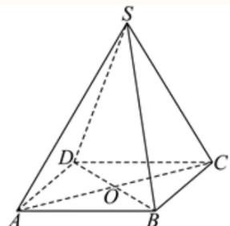
对于选项A，若底面ABCD是平行四边形，设 A C ∩ B D = O A C \cap B D = O A C ∩ B D = O ∣ S A → + S C → = 2 S O → = S B → + S D → | \overrightarrow { S A } + \overrightarrow { S C } = 2 \overrightarrow { S O } = \overrightarrow { S B } + \overrightarrow { S D } ∣ S A + SC = 2 SO = SB + S D
因此 S A → = S B → + S D → − S C → \overrightarrow { S A } = \overrightarrow { S B } + \overrightarrow { S D } - \overrightarrow { S C } S A = SB + S D − SC ( x , y , z ) = ( 1 , − 1 , 1 ) ( x , y , z ) = ( 1 , - 1 , 1 ) ( x , y , z ) = ( 1 , − 1 , 1 )
对于选项B，若 ( x , y , z ) = ( 1 , 0 , − 1 ) ( x , y , z ) = ( 1 , 0 , - 1 ) ( x , y , z ) = ( 1 , 0 , − 1 ) ∣ x S B → + y S C → + z S D → = S B → − S D → = D B → ≠ S A → | x \overrightarrow { S B } + y \overrightarrow { S C } + z \overrightarrow { S D } = \overrightarrow { S B } - \overrightarrow { S D } = \overrightarrow { D B } \neq \overrightarrow { S A } ∣ x SB + y SC + z S D = SB − S D = D B = S A
对于选项C，若 ( x , y , z ) = ( 1 , 0 , 0 ) ( x , y , z ) = ( 1 , 0 , 0 ) ( x , y , z ) = ( 1 , 0 , 0 ) x S B → + y S C → + z S D → = S B → ≠ S A → \overrightarrow { x S B } + \overrightarrow { y S C } + z \overrightarrow { S D } = \overrightarrow { S B } \neq \overrightarrow { S A } x SB + y SC + z S D = SB = S A
对于选项D，若 ( x , y , z ) = ( 1 , − 1 , − 1 ) ( x , y , z ) = ( 1 , - 1 , - 1 ) ( x , y , z ) = ( 1 , − 1 , − 1 ) ∣ x S B → + y S C → + z S D → = S B → − S C → − S D → = C B → − S D → | x \overrightarrow { S B } + y \overrightarrow { S C } + z \overrightarrow { S D } = \overrightarrow { S B } - \overrightarrow { S C } - \overrightarrow { S D } = \overrightarrow { C B } - \overrightarrow { S D } ∣ x SB + y SC + z S D = SB − SC − S D = CB − S D B C ∉ B C \notin BC ∈ / S A → , S D → , C B → \overrightarrow { S A } , \overrightarrow { S D } , \overrightarrow { C B } S A , S D , CB S A → = C B → − S D → \overrightarrow { S A } = \overrightarrow { C B } - \overrightarrow { S D } S A = CB − S D
崇明 · 第14题 ★★☆☆☆ · 教师预估 已知直线l和平面α，则“l垂直于α内的两条直线”是“l⊥α”的（ ）
A. 充分非必要条件
B. 必要非充分条件
C. 充要条件
D. 非充分非必要条件
考点： 线面垂直的充要条件。难度依据： 涉及线面垂直的充要条件；难度为教师预估，需结合原题条件复核。
核查说明： 依据现有底稿归类，尚未逐页校卷、公式校净或独立数学终审。
展开答案与解析 【答案】B
【解析】
利用直线与平面垂直的判定定理，即可得出结论.
根据直线与平面垂直的判定定理可知：
如果一条直线垂直于平面内的两条相交直线，那么这条直线垂直于这个平面.
而“l垂直于α内的两条直线”，没有满足相交，
所以不一定能推出直线与平面垂直，
但是如果一条直线与平面垂直，一定能推出这条直线垂直于平面内的所有直线，
即可得：“l垂直于α内的两条直线”是“l⊥α”的必要不充分条件.
故选：B.
徐汇 · 第6题 ★★☆☆☆ · 教师预估 本题资料或解析有待核事项，预览不可作为已审定成品。
已知m,n为空间中两条不同的直线，α,β为两个不同的平面，若 m ⊂ α , α ∩ β = n m \subset \alpha , \alpha \cap \beta = n m ⊂ α , α ∩ β = n m / / n m / / n m // n m / / β m / / \beta m // β
考点： 线面平行判定与性质；充要条件。难度依据： 线面平行判定与性质；充要条件；按所需步骤与推理量估计
核查说明： 题干与解析已用于人工归类，尚未完成整题公式校净与独立数学终审。
展开答案与解析 【答案】充要.
【解析】
根据线面平行的判定定理和性质定理结合充分条件和必要条件的定义即可得解.
充分性：因为 m ⊂ α , α ∩ β = n , m / / n m \subset \alpha , \alpha \cap \beta = n , m / / n m ⊂ α , α ∩ β = n , m // n
所以m,n共面，
又因为α,β为两个不同的平面， n ⊂ β , n \subset \beta , n ⊂ β ,
所以 ∇ . m ⊄ β , \mathbf { \nabla } . m \not \subset \beta , ∇ . m ⊂ β ,
所以 . m / / β i . m / / \beta _ { \mathrm { i } } . m // β i
必要性：因为 m ⊂ α , α ∩ β = n m \subset \alpha , \alpha \cap \beta = n m ⊂ α , α ∩ β = n n ⊂ α \textstyle { \mathcal { n } } \subset \alpha n ⊂ α
又因为 ∣ m / / β , | m / / \beta , ∣ m // β , m / / n m / / n m // n
所以 m / / n m / / n m // n m / / m / / m //
故答案为：充要.
浦东 · 第14题 ★★☆☆☆ · 教师预估 本题资料或解析有待核事项，预览不可作为已审定成品。
设m、n为两条直线，α、β为两个平面，且 α ∩ β = n \alpha \cap \beta = n α ∩ β = n
A. 若 m ⊥ α , m \bot \alpha , m ⊥ α , m ⊥ n m \perp n m ⊥ n
B. 若 m ˙ / / α \dot { m } / / \alpha m ˙ // α ∣ m / / n \scriptstyle | m / / n ∣ m // n
C. 若 ⋅ ˙ m / / α \dot { \cdot } _ { m } / / \alpha ⋅ ˙ m // α . m / / β , . m / / \beta , . m // β , m / / n m / / n m // n
D. 若 m / / n , m / / n , m // n , ∣ m / / α | m / / \alpha ∣ m // α m / / β m / / \beta m // β
考点： 线面平行垂直关系判定；命题反例。难度依据： 线面平行垂直关系判定；命题反例；按所需步骤与推理量估计
核查说明： 题干与解析已用于人工归类，尚未完成整题公式校净与独立数学终审。；B选项反例把BB1称为平行底面，但它垂直底面；须更换有效反例并回核原题。；题干与解析已用于人工归类，尚未完成整题公式校净与独立数学终审。；B选项反例把BB1称为平行底面，但它垂直底面；须更换有效反例并回核原题。
展开答案与解析 【答案】B
【解析】
选项A，利用线面垂直的性质，即可求解；选项B，在正方体中，通过取特例，即可求解；选项C和D，利用线面平行的性质和判定，即可求解.
对于选项A，因为 α ∩ β = n \alpha \cap \beta = n α ∩ β = n ⊂ α , \subset \alpha , ⊂ α , m ⊥ α m \bot \alpha m ⊥ α m ⊥ n m \perp n m ⊥ n
对于选项B，如图，取平面ABCD为α，平面 A D D 1 A 1 A D D _ { 1 } A _ { 1 } A D D 1 A 1 B B 1 B B _ { 1 } B B 1
显然有 m ˙ / / α \dot { m } / / \alpha m ˙ // α γ ∩ α = l 1 \gamma \cap \alpha = l _ { 1 } γ ∩ α = l 1 m / / α m / / \alpha m // α m / / l 1 m / / l _ { 1 } m // l 1
同理可得 m / / l 2 , l 2 ⊂ β , m / / l _ { 2 } , l _ { 2 } \subset \beta , m // l 2 , l 2 ⊂ β , l 1 / / l 2 l _ { 1 } / / l _ { 2 } l 1 // l 2 . l 2 ⊂ β , l 1 ∉ β . . l _ { 2 } \subset \beta , l _ { 1 } \notin \beta . . l 2 ⊂ β , l 1 ∈ / β . l 1 / / β : l _ { 1 } / / \beta _ { : } l 1 // β :
又 l 1 ⊂ α , α ∩ β = n l _ { 1 } \subset \alpha , \alpha \cap \beta = n l 1 ⊂ α , α ∩ β = n l 1 / / n l _ { 1 } / / n l 1 // n m / / n , m / / n , m // n ,
对于选项D，因为 α ∩ β = n , \alpha \cap \beta = n , α ∩ β = n , n ⊂ α , n ⊂ β , n \subset \alpha , n \subset \beta , n ⊂ α , n ⊂ β , m ⊄ α m \not \subset \alpha m ⊂ α m / / n m / / n m // n m / / α m / / \alpha m // α m ⊂ α . m \subset \alpha . m ⊂ α . ∣ m ∣ ℓ β , \mid m \mid ^ { \ell } \beta , ∣ m ∣ ℓ β , m / / n , n ⊂ β , m / / n , \ n \subset \beta , m // n , n ⊂ β , ⌊ m / / β ⌋ \lfloor m / / \beta \rfloor ⌊ m // β ⌋
长宁 · 第14题 ★★☆☆☆ · 教师预估 已知非零空间向 ♯ a ⃗ , b ⃗ \sharp { \vec { a } } , { \vec { b } } ♯ a , b → c，则下列说法正确的是（ ）
A. G ⃗ a ⃗ ⊥ b ⃗ , a ⃗ ⊥ c ⃗ \vec { \mathcal { G } } \vec { a } \perp \vec { b } , \vec { a } \perp \vec { c } G a ⊥ b , a ⊥ c ∣ b ∣ ⃗ / ∣ c ⃗ \vec { \vert b \vert } / \vec { \vert c } ∣ b ∣ / ∣ c
B. τ ⃗ + a ⃗ ⊥ b ⃗ , a ⃗ ⊥ c ⃗ \stackrel { \scriptscriptstyle + } { \vec { \tau } } \vec { a } \perp \vec { b } , \vec { a } \perp \vec { c } τ + a ⊥ b , a ⊥ c b ⃗ ⊥ c ⃗ \vec { b } \perp \vec { c } b ⊥ c
C. H → a → ⊥ b → , a → / / c → \overrightarrow { \mathcal { H } } \overrightarrow { a } \perp \overrightarrow { b } , \overrightarrow { a } / / \overrightarrow { c } H a ⊥ b , a // c b / / c \stackrel { } { b } / / \stackrel { } { c } b // c
D. H → a → ⊥ b → , a → / / c → \overrightarrow { \mathcal { H } } \overrightarrow { a } \perp \overrightarrow { b } , \overrightarrow { a } / / \overrightarrow { c } H a ⊥ b , a // c ∣ b ⊥ c ∣ ⃗ \vec { | b \perp c | } ∣ b ⊥ c ∣
考点： 判断平行垂直命题与充分必要性。难度依据： 空间向量平行垂直的逻辑关系；判断平行垂直命题与充分必要性
展开答案与解析 【答案】D
【解析】
根据空间向量平行与垂直的定义判断即可.
若→ a ⊥ b ⃗ , a ⃗ ⊥ c ⃗ \perp \vec { b } , \vec { a } \perp \vec { c } ⊥ b , a ⊥ c b ⃗ / / c ⃗ x ⃗ b ⃗ \vec { \mathfrak { b } } / / \vec { c } \vec { \mathfrak { x } } \vec { b } b // c x b → c不共线，故选项A与B错误；
故选：D.
若→ a ⊥ b ⃗ , a ⃗ / / c ⃗ \perp \vec { b } , \vec { a } / / \vec { c } ⊥ b , a // c b ⃗ ⊥ c ⃗ \vec { b } \perp \vec { c } b ⊥ c
闵行 · 第13题 ★★☆☆☆ · 教师预估 本题资料或解析有待核事项，预览不可作为已审定成品。
在空间中，“a , b a,b a , b a , b a,b a , b
A. 充分非必要条件
B. 必要非充分条件
C. 充要条件
D. 既非充分又非必要条件
考点： 判断异面与不相交的逻辑关系。难度依据： 异面直线与充分必要条件；判断异面与不相交的逻辑关系
核查说明： 题干A、B、C选项缺失，仅剩D标记，需回原卷补齐。
展开答案与解析 【答案】A
【解析】
利用异面直线的定义及充分条件、必要条件的定义判断即得.
直线a、b为异面直线，则直线a、b不相交，
反之，直线a、b不相交，直线a、b可能平行，也可能是异面直线，
所以在空间中，“a、b为异面直线”是“a、b不相交”的充分非必要条件.
故选：A
青浦 · 第18题 ★★★☆☆ · 教师预估 本题资料或解析有待核事项，预览不可作为已审定成品。
P − A B C P - A B C P − A BC P A B ⊥ P A B \bot P A B ⊥ A B C , A B = 6 , B C = 2 3 , A C = 2 6 , D . A B C , A B = 6 , B C = 2 { \sqrt { 3 } } , A C = 2 { \sqrt { 6 } } , D . A BC , A B = 6 , BC = 2 3 , A C = 2 6 , D . A D = 2 D B , C E = 2 E B , P D ⊥ A C . A D = 2 D B , C E = 2 E B , P D \bot A C . A D = 2 D B , CE = 2 EB , P D ⊥ A C . D E / / D E / / D E // P A C ; P A C ; P A C ; P D ⊥ P D \perp P D ⊥ A B C A B C A BC
考点： （1）比例分点推出平行线；（2）算出底面垂线后结合面面垂直证明线面垂直。难度依据： （1）比例分点推出平行线；（2）算出底面垂线后结合面面垂直证明线面垂直
核查说明： 题干与解析已用于人工归类，尚未完成整题公式校净与独立数学终审。；解析CD²+AD²=AC²一行与前述CD=2√2、AD=4、AC=2√6实际一致；须保持数据，不把直角位置错移。；题干与解析已用于人工归类，尚未完成整题公式校净与独立数学终审。；解析CD²+AD²=AC²一行与前述CD=2√2、AD=4、AC=2√6实际一致；须保持数据，不把直角位置错移。
展开答案与解析 【解析】
(1) 因为D、E分别为线段AB、BC上的点，且 A D = 2 D B , C E = 2 E B A D = 2 D B , C E = 2 E B A D = 2 D B , CE = 2 EB
所以 D E / / A C D E / / A C D E // A C A C ⊂ A C \subset A C ⊂ P A C P A C P A C D E / / . D E / / . D E //. P A C P A C P A C
(2) 因为 A B = 6 , B C = 2 3 , A C = 2 6 , A B = 6 , B C = 2 { \sqrt { 3 } } , A C = 2 { \sqrt { 6 } } , A B = 6 , BC = 2 3 , A C = 2 6 , A B 2 = 6 2 = B C 2 + A C 2 = 36 A B ^ { 2 } = 6 ^ { 2 } = B C ^ { 2 } + A C ^ { 2 } = 3 6 A B 2 = 6 2 = B C 2 + A C 2 = 36
所以 ∠ A C B = 9 0 ∘ , cos ∠ A B C = 2 3 6 = 3 3 \angle A C B = 9 0 ^ { \circ } , \ \cos \angle A B C = { \frac { 2 { \sqrt { 3 } } } { 6 } } = { \frac { \sqrt { 3 } } { 3 } } ∠ A CB = 9 0 ∘ , cos ∠ A BC = 6 2 3 = 3 3 B D = 2 B D = 2 B D = 2
所以 C D 2 = 2 2 + ( 2 3 ) 2 − 2 × 2 × 2 3 × cos ∠ A B C = 8 C D ^ { 2 } = 2 ^ { 2 } + \left( 2 { \sqrt { 3 } } \right) ^ { 2 } - 2 \times 2 \times 2 { \sqrt { 3 } } \times \cos \angle A B C = 8 C D 2 = 2 2 + ( 2 3 ) 2 − 2 × 2 × 2 3 × cos ∠ A BC = 8 C D = 2 2 C D = 2 { \sqrt { 2 } } C D = 2 2 A D = 4 A D = 4 A D = 4
所以 C D 2 + A D 2 = A C 2 C D ^ { 2 } + A D ^ { 2 } = A C ^ { 2 } C D 2 + A D 2 = A C 2 C D ⊥ A B . C D \bot A B . C D ⊥ A B .
因为平面 P A B ⊥ P A B \bot P A B ⊥ A B C , A B C , A BC , A B , C D ⊂ A B , \ C D \subset A B , C D ⊂ A B C A B C A BC
所以 C D ⊥ C D \perp C D ⊥ P D ⊂ P D \subset P D ⊂ P A B , P A B , P A B , C D ⊥ P D C D \bot P D C D ⊥ P D
因为 P D ⊥ A C P D \bot A C P D ⊥ A C A C ∩ C D = C A C \cap C D = C A C ∩ C D = C A C , C D ⊂ A C , C D \subset A C , C D ⊂ A B C A B C A BC
所以PD⊥平面ABC.
角度、距离与空间综合证明 完整保留空间大题，联系中点构造、建系法和等体积法求角距。
奉贤 · 第19题 ★★★★☆ · 教师预估 本题资料或解析有待核事项，预览不可作为已审定成品。
如图为正四棱锥 P − A B C D , O P - A B C D , O P − A BC D , O C D / / C D / / C D // P A B , P A B , P A B , P A C ⊥ P A C \bot P A C ⊥ (2) (8分) 设E为PB上的一点，− B E → = 2 3 B P → . \overrightarrow { B E } = \frac { 2 } { 3 } \overrightarrow { B P } . BE = 3 2 BP . A D = A P = 3 2 . A D = A P = 3 { \sqrt { 2 } } . A D = A P = 3 2 . arctan 2 2 \arctan { \frac { \sqrt { 2 } } { 2 } } arctan 2 2 A D = 3 2 A D = 3 { \sqrt { 2 } } A D = 3 2
考点： （1）证明线面平行与面面垂直；（2）选①建立坐标求线面角，选②由二面角反求棱长。难度依据： （1）证明线面平行与面面垂直；（2）选①建立坐标求线面角，选②由二面角反求棱长
核查说明： 题干与解析已用于人工归类，尚未完成整题公式校净与独立数学终审。；题干同时有图1图2和两种选做题，考点已分别标注，不得漏掉选②。；题干与解析已用于人工归类，尚未完成整题公式校净与独立数学终审。；题干同时有图1图2和两种选做题，考点已分别标注，不得漏掉选②。
展开答案与解析 【解析】
(1) 因为底面 A B C D A B C D A BC D A B / / C D A B / / C D A B // C D
AB ⊂平面 P A B i P A B _ { \mathrm { i } } P A B i C D ∉ C D \notin C D ∈ / P A B i P A B _ { \mathrm { i } } P A B i
所以 C D / / C D / \mathrm { / } C D / / P A B ; P A B ; P A B ;
A C ⊥ B D , A C \bot B D , A C ⊥ B D , P − A B C D P - A B C D P − A BC D
可得 P O ⊥ P O \bot PO ⊥ A C ⊂ A C \subset A C ⊂ A B C D A B C D A BC D P O ⊥ A C P O \bot A C PO ⊥ A C
由 P O ∩ B D = O , P O , B D ⊂ P O \cap B D = O , \ P O , B D \subset PO ∩ B D = O , PO , B D ⊂ P B D P B D PB D
所以AC⊥平面PBD，
又因为 A C ⊂ A C \subset A C ⊂ P A C , P A C , P A C , P A C ⊥ P A C \bot P A C ⊥ P B D P B D PB D
(2) 选①，如图，以O点为原点， O B , O C , O P O B , O C , O P OB , OC , OP x , y , x , y , x , y ,
正方向建立空间直角坐标系，由 A D = A P = 3 2 , A D = A P = 3 { \sqrt { 2 } } , A D = A P = 3 2 ,
B ( 3 , 0 , 0 ) , C ( 0 , 3 , 0 ) , P ( 0 , 0 , 3 ) , A ( 0 , − 3 , 0 ) ,
B (3, 0, 0), C (0, 3, 0), P (0, 0, 3), A (0, - 3, 0),
B ( 3 , 0 , 0 ) , C ( 0 , 3 , 0 ) , P ( 0 , 0 , 3 ) , A ( 0 , − 3 , 0 ) ,
B P → = ( − 3 , 0 , 3 ) , A C → = ( 0 , 6 , 0 ) ,
\overrightarrow {B P} = (- 3, 0, 3), \overrightarrow {A C} = (0, 6, 0),
BP = ( − 3 , 0 , 3 ) , A C = ( 0 , 6 , 0 ) ,
由 ∣ B E → = 2 3 B P → = 2 3 ( − 3 , 0 , 3 ) = ( − 2 , 0 , 2 ) | \overrightarrow { B E } = \frac { 2 } { 3 } \overrightarrow { B P } = \frac { 2 } { 3 } ( - 3 , 0 , 3 ) = ( - 2 , 0 , 2 ) ∣ BE = 3 2 BP = 3 2 ( − 3 , 0 , 3 ) = ( − 2 , 0 , 2 ) E ( 1 , 0 , 2 ) E \left( 1 , 0 , 2 \right) E ( 1 , 0 , 2 )
所以 E C → = ( − 1 , 3 , − 2 ) \overrightarrow { E C } = ( - 1 , 3 , - 2 ) EC = ( − 1 , 3 , − 2 )
因为 A C ⊥ A C \bot A C ⊥ P B D P B D PB D A C ⊥ A C \bot A C ⊥ B E D B E D BE D
所以 → A C \xrightarrow [ A C ] { } A C
设直线 E C . E C . EC .
sin θ = ∣ cos ⟨ A C → , E C → ⟩ ∣ = ∣ A C → ⋅ E C → ∣ A C → ∣ ⋅ ∣ E C → ∣ ∣ = 18 6 ⋅ 1 + 9 + 4 = 3 14 14 ,
\sin \theta = \left| \cos \left\langle \overrightarrow {A C}, \overrightarrow {E C} \right\rangle \right| = \left| \frac {\overrightarrow {A C} \cdot \overrightarrow {E C}}{\left| \overrightarrow {A C} \right| \cdot \left| \overrightarrow {E C} \right|} \right| = \frac {1 8}{6 \cdot \sqrt {1 + 9 + 4}} = \frac {3 \sqrt {1 4}}{1 4},
sin θ = cos ⟨ A C , EC ⟩ = A C ⋅ EC A C ⋅ EC = 6 ⋅ 1 + 9 + 4 18 = 14 3 14 ,
由 1 θ ∈ [ 0 ∘ , 9 0 ∘ ] 1 \theta \in [ 0 ^ { \circ } , 9 0 ^ { \circ } ] 1 θ ∈ [ 0 ∘ , 9 0 ∘ ] ⋅ θ = arcsin 3 14 14 \cdot \theta = \arcsin { \frac { 3 { \sqrt { 1 4 } } } { 1 4 } } ⋅ θ = arcsin 14 3 14
所以直线EC与平面BED所成角为 arcsin 3 14 14 \arcsin { \frac { 3 { \sqrt { 1 4 } } } { 1 4 } } arcsin 14 3 14
选②，同①以O点为原点， O B ⃗ , O C ⃗ , O P ⃗ \vec { O B } , \vec { O C } , \vec { O P } OB , OC , OP x , y , x , y , x , y ,
正方向建立空间直角坐标系，设 A P = a ( a > 3 ) A P = a \left( a > 3 \right) A P = a ( a > 3 )
B (3, 0, 0), D (−3, 0, 0), C (0, 3, 0), P (0, 0, √a2 − 9)，
BP = (−3, 0, √a2 − 9)，→
由 B E → = 2 3 B P → = 2 3 ( − 3 , 0 , a 2 − 9 ) = ( − 2 , 0 , 2 a 2 − 9 3 ) \overrightarrow { B E } = \frac { 2 } { 3 } \overrightarrow { B P } = \frac { 2 } { 3 } \Big ( - 3 , 0 , \sqrt { a ^ { 2 } - 9 } \Big ) = \left( - 2 , 0 , \frac { 2 \sqrt { a ^ { 2 } - 9 } } { 3 } \right) BE = 3 2 BP = 3 2 ( − 3 , 0 , a 2 − 9 ) = ( − 2 , 0 , 3 2 a 2 − 9 ) ( 1 , 0 , 2 a 2 − 9 3 ) \left( 1 , 0 , { \frac { 2 { \sqrt { a ^ { 2 } - 9 } } } { 3 } } \right) ( 1 , 0 , 3 2 a 2 − 9 )
所以 E C → = ( − 1 , 3 , − 2 a 2 − 9 3 ) , C D → = ( − 3 , − 3 , 0 ) \overrightarrow { E C } = \left( - 1 , 3 , - \frac { 2 \sqrt { a ^ { 2 } - 9 } } { 3 } \right) , \overrightarrow { C D } = \left( - 3 , - 3 , 0 \right) EC = ( − 1 , 3 , − 3 2 a 2 − 9 ) , C D = ( − 3 , − 3 , 0 )
E ⃗ n ⃗ = ( x , y , z ) \vec { \mathbb { E } } \vec { n } = ( x , y , z ) E n = ( x , y , z )
− { C D → ⋅ n → = 0 , E C → ⋅ n → = 0 \left\{ \begin{array} { l l } { \overrightarrow { C D } \cdot \overrightarrow { n } = 0 , } \\ { \overrightarrow { E C } \cdot \overrightarrow { n } = 0 } \end{array} \right. { C D ⋅ n = 0 , EC ⋅ n = 0 { − 3 x − 3 y = 0 − x + 3 y − 2 a 2 − 9 3 z = 0 \left\{ { - 3 x - 3 y = 0 \atop - x + 3 y - { \frac { 2 { \sqrt { a ^ { 2 } - 9 } } } { 3 } } z = 0 } \right. { − x + 3 y − 3 2 a 2 − 9 z = 0 − 3 x − 3 y = 0 − 得 令x = 1得 y = − 1 , z = − 6 a 2 − 9 , y = - 1 , z = \frac { - 6 } { \sqrt { a ^ { 2 } - 9 } } { } , y = − 1 , z = a 2 − 9 − 6 ,
所 L ⃗ L ⃗ = ( 1 , − 1 , − 6 a 2 − 9 ) { \vec { \operatorname { L } } } { \vec { \operatorname { L } } } = \left( 1 , - 1 , { \frac { - 6 } { \sqrt { a ^ { 2 } - 9 } } } \right) L L = ( 1 , − 1 , a 2 − 9 − 6 ) P O ⊥ P O \bot PO ⊥ A B C D A B C D A BC D
所以 P O → = ( 0 , 0 , − 1 ) \overrightarrow { P O } = ( 0 , 0 , - 1 ) PO = ( 0 , 0 , − 1 )
设平面 E C D − E C D - EC D − A B C D A B C D A BC D cos θ = 2 6 \cos \theta = { \frac { 2 } { \sqrt { 6 } } } cos θ = 6 2
6 →n ⋅ PO −→ 由cos θ = cos ⟨→ n, PO = = √a2 − 9 = 2 →n − PO 1 1 + 1 + 36 2 − 9 √6
解得 a = 3 2 . a = 3 { \sqrt { 2 } } . a = 3 2 . A P = 3 2 A P = 3 { \sqrt { 2 } } A P = 3 2
宝山 · 第17题 ★★★☆☆ · 教师预估 …P − A B C D P - A B C D P − A BC D P A = P B = A D = 3 P A = P B = A D = 3 P A = PB = A D = 3 A B = 4 A B = 4 A B = 4 4 5 . 4 { \sqrt { 5 } } . 4 5 . A B C D A B C D A BC D
考点： （1）体积与面面垂直；（2）异面直线夹角。难度依据： 涉及（1）体积与面面垂直；（2）异面直线夹角；难度为教师预估，需结合原题条件复核。
核查说明： 依据现有底稿归类，尚未逐页校卷、公式校净或独立数学终审。
展开答案与解析 【解析】
(1) 证明：设该四棱锥的高为 ，则体积 W = 1 3 S × h = 1 3 × 3 × 4 h = 4 5 \mathtt { W } = { \frac { 1 } { 3 } } S \times h = { \frac { 1 } { 3 } } \times 3 \times 4 h = 4 { \sqrt { 5 } } W = 3 1 S × h = 3 1 × 3 × 4 h = 4 5 Π ‾ h = 5 { \overline { { \Pi } } } h = { \sqrt { 5 } } Π h = 5 △ P A B ∣ \triangle P A B ^ { \rvert } △ P A B ∣ P E ⊥ A B , P E \bot A B , PE ⊥ A B ,
在Rt △ P A E ∣ \triangle P A E ^ { \rvert } △ P A E ∣ P A = 3 , A E = 2 P A = 3 , A E = 2 P A = 3 , A E = 2 P E = 5 P E = { \sqrt { 5 } } PE = 5
所以该四棱锥的高为h即为 P E = 5 P E = { \sqrt { 5 } } PE = 5
即 P E ⊥ P E \bot PE ⊥ A B C D A B C D A BC D P E ⊂ ∓ P E \subset \mp PE ⊂ ∓ P A B P A B P A B
所以面 P A B ⊥ P A B \bot P A B ⊥ A B C D A B C D A BC D
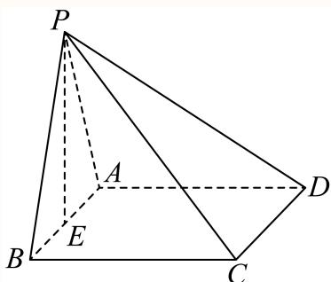
(2) 因为 A B / / C D A B / / C D A B // C D
所以 ∠ P C D \angle P C D ∠ PC D
由（1）知平面 P A B ⊥ P A B \bot P A B ⊥ A B C D , A B C D , A BC D , P A B ∩ P A B \cap P A B ∩ A B C D = A B A B C D = A B A BC D = A B
在矩形 A B C D A B C D A BC D C B ⊥ A B . C B \bot A B . CB ⊥ A B . C B ⊥ C B \bot CB ⊥ P A B P A B P A B
因为 P B ⊂ 4 ‾ P B \subset { \overline { { 4 } } } PB ⊂ 4 P A B , P A B , P A B , C B ⊥ P B C B \bot P B CB ⊥ PB
Rt △ P B C \triangle P B C △ PBC P B = B C = 3 P B = B C = 3 PB = BC = 3 P C = 3 2 , P C = 3 { \sqrt { 2 } } , PC = 3 2 ,
同理可得 P D = 3 2 . P D = 3 { \sqrt { 2 } } . P D = 3 2 .
△ P C D \triangle P C D △ PC D P C = P D = 3 2 , C D = 4 P C = P D = 3 { \sqrt { 2 } } , C D = 4 PC = P D = 3 2 , C D = 4
由余弦定理可得 ⟨ cos ∠ P C D = P C 2 + C D 2 − P D 2 2 P C ⋅ C D = 18 + 16 − 18 2 × 3 2 × 4 = 2 3 , \langle \cos \angle P C D = \frac { P C ^ { 2 } + C D ^ { 2 } - P D ^ { 2 } } { 2 P C \cdot C D } = \frac { 1 8 + 1 6 - 1 8 } { 2 \times 3 \sqrt { 2 } \times 4 } = \frac { \sqrt { 2 } } { 3 } , ⟨ cos ∠ PC D = 2 PC ⋅ C D P C 2 + C D 2 − P D 2 = 2 × 3 2 × 4 18 + 16 − 18 = 3 2 ,
所以异面直线PC 和AB 所成角的余弦值为 2 3 \frac { \sqrt { 2 } } { 3 } 3 2
崇明 · 第17题 ★★★☆☆ · 教师预估 本题资料或解析有待核事项，预览不可作为已审定成品。
如图，在直三棱柱 A B C − A 1 B 1 C 1 A B C - A _ { 1 } B _ { 1 } C _ { 1 } A BC − A 1 B 1 C 1 A 1 C 1 A _ { 1 } C _ { 1 } A 1 C 1 A A 1 = A B = B C = 2 A A _ { 1 } = A B = B C = 2 \quad A A 1 = A B = BC = 2 C 1 F ⊥ A B . C _ { 1 } F \bot A B . C 1 F ⊥ A B . C 1 F / / C _ { 1 } F / / C 1 F //
考点： （1）中点构造线面平行；（2）等体积法求点面距离。难度依据： 涉及（1）中点构造线面平行；（2）等体积法求点面距离；难度为教师预估，需结合原题条件复核。
核查说明： 原解中G的中点位置及长度运算文字存在矛盾，须回核。；依据现有底稿归类，尚未逐页校卷、公式校净或独立数学终审。
展开答案与解析 【解析】
(1) 取AB中点G，连接 F G , E G F G , E G FG , EG F G / / A C F G / / A C FG // A C F G = 1 2 A C . F G = { \frac { 1 } { 2 } } A C . FG = 2 1 A C .
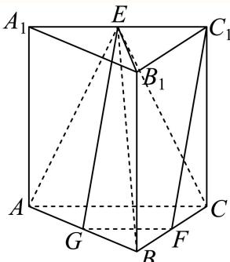
又 C 1 E / / A C C _ { 1 } E / / A C C 1 E // A C C 1 E = 1 2 A C C _ { 1 } E = { \frac { 1 } { 2 } } A C C 1 E = 2 1 A C F G / / C 1 E F G / / C _ { 1 } E FG // C 1 E F G = C 1 E F G = C _ { 1 } E FG = C 1 E
所以四边形 F G E C 1 F G E C _ { 1 } FGE C 1 C 1 F / / E G C _ { 1 } F / / E G C 1 F // EG
又 E G ⊂ E G \subset EG ⊂ A B E A B E A BE C 1 F ⊄ C _ { 1 } F \not \subset C 1 F ⊂ C 1 F / / C _ { 1 } F / / C 1 F // A B E A B E A BE
(2) 由（1）点G是AC中点，连接 E B 1 E B _ { 1 } E B 1
因为 ∣ C 1 C ⊥ | C _ { 1 } C \bot ∣ C 1 C ⊥ A B C , A B ⊂ Ψ ‾ H ^ A B C . A B C , A B \subset { \overline { { \Psi } } } \widehat { \mathbb { H } } A B C . A BC , A B ⊂ Ψ H A BC . C 1 C ⊥ A B , C _ { 1 } C \bot A B , C 1 C ⊥ A B ,
又 C 1 F ⊥ A B , C _ { 1 } F \bot A B , C 1 F ⊥ A B , C 1 F ∩ C 1 C = C 1 , C 1 F , C 1 C ⊂ T H B 1 C 1 C B , \begin{array} { r } { C _ { 1 } F \cap C _ { 1 } C = C _ { 1 } , C _ { 1 } F , C _ { 1 } C \subset { \mathbb { T } } { \mathbb { H } } B _ { 1 } C _ { 1 } C B , } \end{array} C 1 F ∩ C 1 C = C 1 , C 1 F , C 1 C ⊂ T H B 1 C 1 CB ,
所以 A B ⊥ A B \bot A B ⊥ B 1 C 1 C B B _ { 1 } C _ { 1 } C B B 1 C 1 CB B C ⊂ B C \subset BC ⊂ B 1 C 1 C B 3 B _ { 1 } C _ { 1 } C B _ { 3 } B 1 C 1 C B 3 ∁ B ⊥ A B . \complement B \bot A B . ∁ B ⊥ A B .
所以 S △ A B C = 1 2 × 2 × 2 = 2 , A 1 E = 1 2 A 1 C 1 = 1 2 A A 1 2 + A 1 C 1 2 = 1 2 2 2 + 2 2 = 2 , S _ { \triangle A B C } = \frac { 1 } { 2 } \times 2 \times 2 = 2 , A _ { 1 } E = \frac { 1 } { 2 } A _ { 1 } C _ { 1 } = \frac { 1 } { 2 } \sqrt { A A _ { 1 } ^ { 2 } + A _ { 1 } C _ { 1 } ^ { 2 } } = \frac { 1 } { 2 } \sqrt { 2 ^ { 2 } + 2 ^ { 2 } } = \sqrt { 2 } , S △ A BC = 2 1 × 2 × 2 = 2 , A 1 E = 2 1 A 1 C 1 = 2 1 A A 1 2 + A 1 C 1 2 = 2 1 2 2 + 2 2 = 2 ,
B 1 E = 2 ,
B _ {1} E = \sqrt {2},
B 1 E = 2 ,
A E = A A 1 2 + A 1 E 2 = 6 , B E = B B 1 2 + B 1 E 2 = 4 + 1 = 6 ,
A E = \sqrt {A A _ {1} ^ {2} + A _ {1} E ^ {2}} = \sqrt {6}, B E = \sqrt {B B _ {1} ^ {2} + B _ {1} E ^ {2}} = \sqrt {4 + 1} = \sqrt {6},
A E = A A 1 2 + A 1 E 2 = 6 , BE = B B 1 2 + B 1 E 2 = 4 + 1 = 6 ,
所以 △ A B E \triangle A B E △ A BE E G ⊥ A B , E G \bot A B , EG ⊥ A B , E G = A E 2 − A G 2 = 5 , E G = { \sqrt { A E ^ { 2 } - A G ^ { 2 } } } = { \sqrt { 5 } } , EG = A E 2 − A G 2 = 5 ,
所以 S △ A B E = 1 2 A B ⋅ E G = 5 , S _ { \triangle A B E } = \frac { 1 } { 2 } A B \cdot E G = \sqrt { 5 } , S △ A BE = 2 1 A B ⋅ EG = 5 ,
设点C到平面ABE的距离为h，由 V C − A B E = V E − A B C V _ { C - A B E } = V _ { E - A B C } V C − A BE = V E − A BC 1 3 S △ A B E ⋅ h = 1 3 S △ A B C ⋅ A A 1 \frac { 1 } { 3 } S _ { \triangle A B E } \cdot h = \frac { 1 } { 3 } S _ { \triangle A B C } \cdot A A _ { 1 } 3 1 S △ A BE ⋅ h = 3 1 S △ A BC ⋅ A A 1
所以 1 3 × 5 h = 1 3 × 2 × 2 \frac { 1 } { 3 } \times \sqrt { 5 } h = \frac { 1 } { 3 } \times 2 \times 2 3 1 × 5 h = 3 1 × 2 × 2 h = 4 5 5 h = { \frac { 4 { \sqrt { 5 } } } { 5 } } h = 5 4 5 4 5 5 \frac { 4 { \sqrt { 5 } } } { 5 } 5 4 5
徐汇 · 第18题 ★★★★☆ · 教师预估 本题资料或解析有待核事项，预览不可作为已审定成品。
如图，在四棱锥 P − A B C D P - A B C D P − A BC D A D / / B C , ∠ A D C = ∠ P A B = π 2 , B C = C D = 1 2 A D A D / / B C , \angle A D C = \angle P A B = \frac { \pi } { 2 } , B C = C D = \frac { 1 } { 2 } A D A D // BC , ∠ A D C = ∠ P A B = 2 π , BC = C D = 2 1 A D π 2 \frac { \pi } { 2 } 2 π C D / λ ˉ C D / { \bar { \lambda } } C D / λ ˉ P − C D − A P - C D - A P − C D − A π 4 \frac { \pi } { 4 } 4 π
考点： （1）中点与线面平行判定；（2）二面角转线面角。难度依据： 线面平行与二面角及线面角；空间法向量求线面角；按所需步骤与推理量估计
核查说明： 题干与解析已用于人工归类，尚未完成整题公式校净与独立数学终审。
展开答案与解析 【解析】
(1) 因为 A D / / B C , B C = 1 2 A D A D / / B C , B C = \frac { 1 } { 2 } A D A D // BC , BC = 2 1 A D
所以 B C / / E D B C / / E D BC // E D B C = E D B C = E D BC = E D
所以 C D / / B E C D / / B E C D // BE B E ⊂ B E \subset BE ⊂ P B E , C D P B E , C D PBE , C D
由线面平行的判定定理知， C D / / C D / / C D //
(2) 解法一：因为 ∠ P A B = π 2 \angle P A B = { \frac { \pi } { 2 } } ∠ P A B = 2 π P A ⊥ A B , P A \bot A B , P A ⊥ A B , π 2 \frac { \pi } { 2 } 2 π P A ⊥ C D P A \bot C D P A ⊥ C D
又 A B ∩ C D = M , A B , C D ⊂ ∃ E → E → E → A B C D , A P ⊥ A B \cap C D = M , A B , C D \subset \exists \overrightarrow { \mathbb { E } } \overrightarrow { \mathbb { E } } \overrightarrow { \mathbb { E } } A B C D , A P \perp A B ∩ C D = M , A B , C D ⊂ ∃ E E E A BC D , A P ⊥ A B C D A B C D A BC D
又 C D ⊥ A D C D \bot A D C D ⊥ A D C D ⊥ P D C D \bot P D C D ⊥ P D
因此 ∠ P D A \angle P D A ∠ P D A P − C D − A P - C D - A P − C D − A ∠ P D A = π 4 \angle P D A = { \frac { \pi } { 4 } } ∠ P D A = 4 π P A = A D P A = A D P A = A D
不妨设 A D = 2 a A D = 2 a A D = 2 a B C = C D = 1 2 A D = a . B C = C D = { \frac { 1 } { 2 } } A D = a . BC = C D = 2 1 A D = a .
以A为坐标原点，平行于CD的直线为x轴，AD所在直线为y轴，AP所在直线为z轴，
建立如图所示的空间直角坐标系，
所以 P ( 0 , 0 , 2 a ) , E ( 0 , a , 0 ) , C ( − a , 2 a , 0 ) P \left( 0 , 0 , 2 a \right) , E \left( 0 , a , 0 \right) , C \left( - a , 2 a , 0 \right) P ( 0 , 0 , 2 a ) , E ( 0 , a , 0 ) , C ( − a , 2 a , 0 ) # a > 0 ) \# a > 0 ) # a > 0 )
则 ∣ E C → = ( − a , a , 0 ) , P E → = ( 0 , a , − 2 a ) , A P → = ( 0 , 0 , 2 a ) | \overrightarrow { E C } = ( - a , a , 0 ) , \overrightarrow { P E } = ( 0 , a , - 2 a ) , \overrightarrow { A P } = ( 0 , 0 , 2 a ) ∣ EC = ( − a , a , 0 ) , PE = ( 0 , a , − 2 a ) , A P = ( 0 , 0 , 2 a )
设平面PCE 的一个法向量为 ∣ n ⃗ = ( x , y , z ) \vec { \mid n } = ( x , y , z ) ∣ n = ( x , y , z )
则 { n ⃗ ⋅ P E → = 0 n ⃗ ⋅ E C → = 0 , \left\{ { \begin{array} { l } { { \vec { n } } \cdot { \overrightarrow { P E } } = 0 } \\ { { \vec { n } } \cdot { \overrightarrow { E C } } = 0 } \end{array} } \right. , { n ⋅ PE = 0 n ⋅ EC = 0 , { y − 2 z = 0 − x + y = 0 \left\{ { \begin{array} { l } { y - 2 z = 0 } \\ { - x + y = 0 } \end{array} } \right. { y − 2 z = 0 − x + y = 0
令y = 2，则 x = 2 , z = 1 x = 2 , z = 1 x = 2 , z = 1 ↑ ⋅ ⃗ n ⃗ = ( 2 , 2 , 1 ) \stackrel { } { \uparrow } \stackrel { } { \vec { \cdot } } \vec { n } = ( 2 , 2 , 1 ) ↑ ⋅ n = ( 2 , 2 , 1 )
设直线PA与平面PCE所成角为θ，
AP ⋅ n → 2 1 则sin θ = cos = = = 3 × 2 3 AP →n
即直线 P A P A { } P A 1 3 \frac 1 3 3 1
解法二：过A作 A H ⊥ C E A H \bot C E A H ⊥ CE
由（1）知： C D / / B E C D / / B E C D // BE
因为 P A ⊥ C D P A \bot C D P A ⊥ C D P A ⊥ B E P A \bot B E P A ⊥ BE
因为 ∠ A D C = ∠ P A B = π 2 \angle A D C = \angle P A B = { \frac { \pi } { 2 } } ∠ A D C = ∠ P A B = 2 π P A ⊥ A B P A \bot A B P A ⊥ A B
又 A B ∩ B E = B , A B , B E ⊂ A B \cap B E = B , A B , B E \subset A B ∩ BE = B , A B , BE ⊂ A B C D A B C D A BC D P A ⊥ P A \bot P A ⊥ A B C D A B C D A BC D
因为 C E ⊂ C E \subset CE ⊂ A B C D A B C D A BC D P A ⊥ C E P A \bot C E P A ⊥ CE
又AH是PH在平面 A B C D A B C D A BC D P H ⊥ C E P H \bot C E P H ⊥ CE
又 P A ∩ P H = P P A \cap P H = P P A ∩ P H = P C E ⊥ C E \bot CE ⊥ P A H P A H P A H
再过A作 A I ⊥ P H A I \bot P H A I ⊥ P H P H ∓ I P H \mp I P H ∓ I
因为 C E ⊥ C E \bot CE ⊥ P A H , A I ⊂ P A H , A I \subset P A H , A I ⊂ P A H P A H P A H A I ⊥ C E A I \bot C E A I ⊥ CE
又 P H ∩ C E = H . P H \cap C E = H . P H ∩ CE = H . A I ⊥ A I \perp A I ⊥ P C E P C E PCE ∠ A P I \angle A P I ∠ A P I
因为 ′ C D ⊥ A D , P A ⊥ ^ { \prime } C D \bot A D , P A \bot ′ C D ⊥ A D , P A ⊥ A B C D A B C D A BC D C D ⊥ P D C D \bot P D C D ⊥ P D
因此 ∠ P D A \angle P D A ∠ P D A P − C D − A P - C D - A P − C D − A ∠ P D A = π 4 \angle P D A = { \frac { \pi } { 4 } } ∠ P D A = 4 π
设 B C = C D = 1 2 A D = x ( x > 0 ) B C = C D = { \frac { 1 } { 2 } } A D = x \left( x > 0 \right) BC = C D = 2 1 A D = x ( x > 0 ) A D = P A = 2 x A D = P A = 2 x A D = P A = 2 x
因为 B C = C D , C D ⊥ A D . B C = C D , C D \bot A D . BC = C D , C D ⊥ A D .
所以 ∠ C E D = ∠ A E H = π 4 \angle C E D = \angle A E H = { \frac { \pi } { 4 } } ∠ CE D = ∠ A E H = 4 π
所以 A H = 2 2 x A H = { \frac { \sqrt { 2 } } { 2 } } x A H = 2 2 x tan ∠ A P I = tan ∠ A P H = A H P A = 2 2 x 2 x = 2 4 \tan \angle A P I = \tan \angle A P H = { \frac { A H } { P A } } = { \frac { { \frac { { \sqrt { 2 } } } { 2 } } x } { 2 x } } = { \frac { \sqrt { 2 } } { 4 } } tan ∠ A P I = tan ∠ A P H = P A A H = 2 x 2 2 x = 4 2
所以 sin ∠ A P I = 1 3 \sin \angle A P I = { \frac { 1 } { 3 } } sin ∠ A P I = 3 1
即直线 P A − P A - P A − 1 3 \frac 1 3 3 1
普陀 · 第17题 ★★★★☆ · 教师预估 本题资料或解析有待核事项，预览不可作为已审定成品。
图1所示的平行四边形ABCD中， C A = C B = 1 , C D = 2 C A = C B = 1 , \ C D = { \sqrt { 2 } } C A = CB = 1 , C D = 2 △ D A C \triangle D A C △ D A C P − A B C P - A B C P − A BC . P B = 3 . P B = { \sqrt { 3 } } . PB = 3 A M ⊥ B C A M \bot B C A M ⊥ BC P N / / P N / / PN // P − N B − A P - N B - A P − NB − A
考点： （1）勾股与线面垂直传递；（2）构造矩形顶点给出点N并找二面角平面角。难度依据： （1）勾股与线面垂直传递；（2）构造矩形顶点给出点N并找二面角平面角
核查说明： 题干与解析已用于人工归类，尚未完成整题公式校净与独立数学终审。
展开答案与解析 【解析】
(1) 因为 C A = C B = D A = 1 C A = C B = D A = 1 C A = CB = D A = 1 C D = A B = 2 C D = A B = { \sqrt { 2 } } C D = A B = 2
C A 2 + C B 2 = A B 2 = 2 ,
C A ^ {2} + C B ^ {2} = A B ^ {2} = 2,
C A 2 + C B 2 = A B 2 = 2 ,
所 ∠ A C B = 9 0 ∘ \angle A C B = 9 0 ^ { \circ } ∠ A CB = 9 0 ∘ ∠ D A C = 9 0 ∘ \angle D A C = 9 0 ^ { \circ } ∠ D A C = 9 0 ∘ D A ⊥ A C , B C ⊥ C A D A \bot A C , B C \bot C A D A ⊥ A C , BC ⊥ C A
图2中， P A = D A = 1 , A B = 2 , P B = 3 , P A = D A = 1 , A B = \sqrt { 2 } , P B = \sqrt { 3 } , P A = D A = 1 , A B = 2 , PB = 3 ,
则 P A 2 + A B 2 = P B 2 = 3 P A ^ { 2 } + A B ^ { 2 } = P B ^ { 2 } = 3 P A 2 + A B 2 = P B 2 = 3 P A ⊥ A B . P A \bot A B . P A ⊥ A B . P A ⊥ A C P A \bot A C P A ⊥ A C
又 A B , A C A B , A C A B , A C
所以 P A ⊥ P A \bot P A ⊥ A B C , A B C , A BC , A B C A B C A BC
所以 P A ⊥ B C P A \bot B C P A ⊥ BC B C ⊥ C A B C \bot C A BC ⊥ C A
PA,CA为平面PAC内两条相交直线，
所以 B C ⊥ B C \bot BC ⊥ P A C , P A C , P A C ,
所以 A M ⊥ B C A M \bot B C A M ⊥ BC
(2)
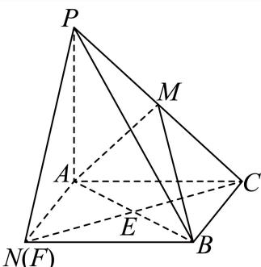
N(F)
以 C A , C B C A , C B C A , CB A C B F A C B F A CBF C F , C F , CF , E : E _ { : } E :
因为 E , M E , M E , M ⌈ C F , C P \lceil C F , C P ⌈ CF , CP
所以 P F / / M E P F / / M E PF // ME M A B ♭ M A B ^ { \flat } M A B ♭ M A B , ′ M A B _ { , } ^ { \prime } M A B , ′ P F / / P F / / PF // M A B M A B M A B
即点F就是N点，
由（1）知 P A ⊥ P A \bot P A ⊥ A C B N A C B N A CBN
所以 B N ⊥ P A B N \bot P A BN ⊥ P A B N ⊥ A N B N \bot A N BN ⊥ A N
AN,PA是平面 P A N P A N P A N
所以 B N ⊥ B N \bot BN ⊥ P A N P A N P A N P A N ∣ P A N | P A N ∣
所以 P N ⊥ B N , P N \bot B N , PN ⊥ BN , A N ⊥ B N A N \bot B N A N ⊥ BN
所以 ∠ P N A \angle P N A ∠ PN A P − N B − A P - N B - A P − NB − A
因为 P A ⊥ A N , P A = A N . P A \bot A N , P A = A N . P A ⊥ A N , P A = A N .
所以 ∠ P N A = 4 5 ∘ \angle P N A = 4 5 ^ { \circ } ∠ PN A = 4 5 ∘
所以二面角 P − N B − A P - N B - A P − NB − A 4 5 ∘ 4 5 ^ { \circ } 4 5 ∘
杨浦 · 第17题 ★★★☆☆ · 教师预估 本题资料或解析有待核事项，预览不可作为已审定成品。
如图，在正方体 A B C D − A 1 B 1 C 1 D 1 A B C D - A _ { 1 } B _ { 1 } C _ { 1 } D _ { 1 } A BC D − A 1 B 1 C 1 D 1 E F ⊥ B D 1 E F \bot B D _ { 1 } EF ⊥ B D 1 B 1 − E F − B B _ { 1 } - E F - B B 1 − EF − B
考点： （1）正方体线线垂直；（2）二面角。难度依据： 正方体垂直与二面角；向量证明垂直；按所需步骤与推理量估计
核查说明： 题干与解析已用于人工归类，尚未完成整题公式校净与独立数学终审。
展开答案与解析 【解析】
(1) 如图所示，连接AC，BD， B 1 D 1 B _ { 1 } D _ { 1 } B 1 D 1
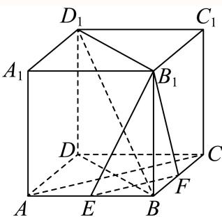
由 1 B C D − A 1 B 1 C 1 D 1 1 B C D - A _ { 1 } B _ { 1 } C _ { 1 } D _ { 1 } 1 BC D − A 1 B 1 C 1 D 1
可知 A C ⊥ B D A C \bot B D A C ⊥ B D D D 1 ⊥ D D _ { 1 \perp } D D 1 ⊥ A B C D A B C D A BC D E F ⊂ E F \subset EF ⊂ A B C D A B C D A BC D
∴ D D 1 ⊥ E F ,
\therefore D D _ {1} \perp E F,
∴ D D 1 ⊥ EF ,
∵ E , F \because E , \ F ∵ E , F
∴ E F ∥ A C , ∴ E F ⊥ B D ,
\therefore E F \parallel A C, \therefore E F \perp B D,
∴ EF ∥ A C , ∴ EF ⊥ B D ,
∵ B D ∩ D D 1 = D , \because B D \cap D D _ { 1 } = D , ∵ B D ∩ D D 1 = D , D D 1 ⊂ D D _ { 1 } \subset D D 1 ⊂ B D D 1 B 1 B D D _ { 1 } B _ { 1 } B D D 1 B 1
∴ E F ⊥ \therefore E F \bot ∴ EF ⊥ B D D 1 B 1 B D D _ { 1 } B _ { 1 } B D D 1 B 1
∵ B D 1 ⊂ \because B D _ { 1 } \subset ∵ B D 1 ⊂ B D D 1 B 1 B D D _ { 1 } B _ { 1 } B D D 1 B 1
∴ E F ⊥ B D 1 \therefore E F \bot B D _ { 1 } ∴ EF ⊥ B D 1
(2) 设正方体 A B C D − A 1 B 1 C 1 D 1 A B C D - A _ { 1 } B _ { 1 } C _ { 1 } D _ { 1 } A BC D − A 1 B 1 C 1 D 1
法一：
如图所示，设 E F ∩ B D = M E F \cap B D = M EF ∩ B D = M B 1 M B _ { 1 } M B 1 M
由（1）得 E F ⊥ E F \bot EF ⊥ B D D 1 B 1 B D D _ { 1 } B _ { 1 } B D D 1 B 1
∵ B M , B 1 M ⊂ \because B M , B _ { 1 } M \subset ∵ BM , B 1 M ⊂ B D D 1 B 1 B D D _ { 1 } B _ { 1 } B D D 1 B 1
∴ B M ⊥ E F , B 1 M ⊥ E F ,
\therefore B M \perp E F, B _ {1} M \perp E F,
∴ BM ⊥ EF , B 1 M ⊥ EF ,
∴二面角 B 1 − E F − B _ { 1 } - E F - B 1 − EF − ∠ B 1 M B \angle B _ { 1 } M B ∠ B 1 MB
又 B B 1 ⊥ B M ⋅ B B _ { 1 } \bot B M _ { \cdot } B B 1 ⊥ B M ⋅
在Rt △ B B 1 \triangle B B _ { 1 } △ B B 1 B M = 1 4 B D = 1 4 A B 2 + A D 2 = 2 , B B 1 = 4 , B M = \frac { 1 } { 4 } B D = \frac { 1 } { 4 } \sqrt { A B ^ { 2 } + A D ^ { 2 } } = \sqrt { 2 } , B B _ { 1 } = 4 , BM = 4 1 B D = 4 1 A B 2 + A D 2 = 2 , B B 1 = 4 ,
所以 B 1 M = B 1 B 2 + B M 2 = 4 2 + 2 2 = 3 2 , B _ { 1 } M = \sqrt { B _ { 1 } B ^ { 2 } + B M ^ { 2 } } = \sqrt { 4 ^ { 2 } + \sqrt { 2 } ^ { 2 } } = 3 \sqrt { 2 } , B 1 M = B 1 B 2 + B M 2 = 4 2 + 2 2 = 3 2 , cos ∠ B 1 M B = B M B 1 M = 1 3 \cos \angle B _ { 1 } M B = \frac { B M } { B _ { 1 } M } = \frac { 1 } { 3 } cos ∠ B 1 MB = B 1 M BM = 3 1
所以二面角 B 1 − E F B _ { 1 } - E F B 1 − EF 1 3 \frac 1 3 3 1 B 1 − E F − B _ { 1 } - E F - B 1 − EF − arccos 1 3 \operatorname { a r c c o s } { \frac { 1 } { 3 } } arccos 3 1
法二：
如图所示，以点D为坐标原点，DA，DC， D D 1 D D _ { 1 } D D 1 D − x y z D - x y z D − x yz
则B (4, 4, 0)，E (4, 2, 0)，F (2, 4, 0)， B 1 ( 4 , 4 , 4 ) B _ { 1 } \left( 4 , 4 , 4 \right) B 1 ( 4 , 4 , 4 )
即 ∣ E F → = ( − 2 , 2 , 0 ) , E B 1 → = ( 0 , 2 , 4 ) | \overrightarrow { E F } = ( - 2 , 2 , 0 ) , \overrightarrow { E B _ { 1 } } = ( 0 , 2 , 4 ) ∣ EF = ( − 2 , 2 , 0 ) , E B 1 = ( 0 , 2 , 4 )
设平面 B 1 E F B _ { 1 } E F B 1 EF ≡ ▽ n ⃗ = ( x , y , z ) \stackrel { \triangledown } { \equiv } \vec { n } = ( x , y , z ) ≡ ▽ n = ( x , y , z ) { E F → ⊥ n → E B 1 → ⊥ n → , \left\{ \begin{array} { l } { \overrightarrow { E F } \bot \overrightarrow { n } } \\ { \overrightarrow { E B _ { 1 } } \bot \overrightarrow { n } } \end{array} \right. , { EF ⊥ n E B 1 ⊥ n , { E F → ⋅ n → = − 2 x + 2 y = 0 E B 1 → ⋅ n → = 2 y + 4 z = 0 \left\{ { \begin{array} { l } { { \overrightarrow { E F } } \cdot { \overrightarrow { n } } = - 2 x + 2 y = 0 } \\ { { \overrightarrow { E B _ { 1 } } } \cdot { \overrightarrow { n } } = 2 y + 4 z = 0 } \end{array} } \right. { EF ⋅ n = − 2 x + 2 y = 0 E B 1 ⋅ n = 2 y + 4 z = 0
令 z = − 1 z = - 1 z = − 1 ∣ n ⃗ = ( 2 , 2 , − 1 ) \vec { | n } = ( 2 , 2 , - 1 ) ∣ n = ( 2 , 2 , − 1 )
易知平面 B E F B E F BEF m → = B B 1 → = ( 0 , 0 , 4 ) \overrightarrow { m } = \overrightarrow { B B _ { 1 } } = ( 0 , 0 , 4 ) m = B B 1 = ( 0 , 0 , 4 )
∴ cos ⟨ n → , m → ⟩ = n → ⋅ m → ∣ n → ∣ ⋅ ∣ m → ∣ = − 4 2 2 + 2 2 + ( − 1 ) 2 ⋅ 4 = − 1 3 ,
\therefore \cos \left\langle \overrightarrow {n}, \overrightarrow {m} \right\rangle = \frac {\overrightarrow {n} \cdot \overrightarrow {m}}{\left| \overrightarrow {n} \right| \cdot \left| \overrightarrow {m} \right|} = \frac {- 4}{\sqrt {2 ^ {2} + 2 ^ {2} + (- 1) ^ {2}} \cdot 4} = - \frac {1}{3},
∴ cos ⟨ n , m ⟩ = n ⋅ m n ⋅ m = 2 2 + 2 2 + ( − 1 ) 2 ⋅ 4 − 4 = − 3 1 ,
∵二面角 B 1 − E F − B B _ { 1 } - E F - B B 1 − EF − B
∴二面角 B 1 − E F − B _ { 1 } - E F - B 1 − EF − 1 3 \frac 1 3 3 1
即二面角 B 1 − E F − B B _ { 1 } - E F - B B 1 − EF − B arccos 1 3 \operatorname { a r c c o s } { \frac { 1 } { 3 } } arccos 3 1
松江 · 第18题 ★★★☆☆ · 教师预估 本题资料或解析有待核事项，预览不可作为已审定成品。
如图，已知AB⊥平面ACD，AB∥DE， △ A C D \triangle A C D △ A C D A D = D E = 2 A B A D = D E = 2 A B A D = D E = 2 A B
考点： （1）中点连线与线面平行；（2）空间向量求线面角。难度依据： 线面平行及线面角；空间法向量；按所需步骤与推理量估计
核查说明： 题干与解析已用于人工归类，尚未完成整题公式校净与独立数学终审。
展开答案与解析 【解析】
（1）取CE的中点M，证明四边形BMFA为平行四边形，然后得：AF∥BM，进而得出答案.
（2）要求直线AD和平面BCE所成角的正弦值，通过建立空间直角坐标系，用向量法即可得出答案.
（1）取CE的中点M，连接BM,FM，因为 F为CD的中点.所以 F M ∥ D E F M \| D E FM ∥ D E F M = 1 2 D E F M = { \frac { 1 } { 2 } } D E FM = 2 1 D E A B ∥ D E A B \| D E A B ∥ D E F M ∥ A B F M \| A B FM ∥ A B F M = A B F M = A B FM = A B
故四边形BMFA为平行四边形.所以AF∥BM
又因为 B M ⊂ Ψ ‾ H ‾ B C E B M \subset { \overline { { \Psi } } } { \overline { { \mathbb { H } } } } B C E BM ⊂ Ψ H BCE
所以AF∥平面BCE.
（2）因为 A B ⊥ A B \bot A B ⊥ △ A C D \triangle A C D △ A C D
以A为坐标原点，建立空间直角坐标系，如下图所示.
设 A D = D E = 2 A B = 2 a A D = D E = 2 A B = 2 a A D = D E = 2 A B = 2 a
则A(0, 0, 0) ，D(0, 2a, 0)，E(0, 2a, 2a)，B(0, 0, a)，C (√3a, a, 0)
则 ∣ A D ⟶ = ( 0 , 2 a , 0 ) \stackrel { \longrightarrow } { | A D } = ( 0 , 2 a , 0 ) ∣ A D ⟶ = ( 0 , 2 a , 0 ) B C → = ( 3 a , a , − a ) , B E → = ( 0 , 2 a , a ) \overrightarrow { B C } = \left( \sqrt { 3 } a , a , - a \right) , \overrightarrow { B E } = ( 0 , 2 a , a ) BC = ( 3 a , a , − a ) , BE = ( 0 , 2 a , a )
设平面BCE的法向量为 Ξ ⃗ = ( x , y , z ) \vec { \Xi } = ( x , y , z ) Ξ = ( x , y , z )
{ n → ⋅ B C → = 0 n → ⋅ B E → = 0
\left\{ \begin{array}{l} \overrightarrow {n} \cdot \overrightarrow {B C} = 0 \\ \overrightarrow {n} \cdot \overrightarrow {B E} = 0 \end{array} \right.
{ n ⋅ BC = 0 n ⋅ BE = 0
令 y = 1 y = 1 y = 1 z = − 2 , x = − 3 z = - 2 , x = - \sqrt { 3 } z = − 2 , x = − 3 ∣ n → = ( − 3 , 1 , − 2 ) \overrightarrow { \vert n } = \left( - \sqrt { 3 } , 1 , - 2 \right) ∣ n = ( − 3 , 1 , − 2 )
设直线AD和平面BCE所成角为θ，则 sin θ = ∣ n → ⋅ A D → ∣ ∣ n → ∣ ⋅ ∣ A D → ∣ = 2 a 2 a × 2 2 = 2 4 \sin \theta = { \frac { \left| { \overrightarrow { n } } \cdot { \overrightarrow { A D } } \right| } { \left| { \overrightarrow { n } } \right| \cdot \left| { \overrightarrow { A D } } \right| } } = { \frac { 2 a } { 2 a \times 2 { \sqrt { 2 } } } } = { \frac { \sqrt { 2 } } { 4 } } sin θ = ∣ n ∣ ⋅ A D n ⋅ A D = 2 a × 2 2 2 a = 4 2
本题主要考查直线与平面平行及直线与平面所成角的知识，属于中档题目.
虹口 · 第9题 ★★★☆☆ · 教师预估 如图，已知正三角形ABC和正方形BCDE的边长均为2，且二面角 A − B C − D A - B C - D A − BC − D π 6 \frac { \pi } { 6 } 6 π A C → . B D → = { \overrightarrow { A C } } . { \overrightarrow { B D } } = A C . B D =
考点： 二面角与空间向量数量积。难度依据： 涉及二面角与空间向量数量积；难度为教师预估，需结合原题条件复核。
核查说明： 依据现有底稿归类，尚未逐页校卷、公式校净或独立数学终审。
展开答案与解析 【答案】−1.
【解析】
设 F , G F , G F , G B C , D E B C , D E BC , D E A F , F G , A F , F G , A F , FG , ∠ A F G \angle A F G ∠ A FG A − B C − D A - B C - D A − BC − D
设 F , G F , G F , G A F , F G A F , F G A F , FG
在正三角形ABC中， A F ⊥ B C , A F = 3 . A { \cal F } \bot B { \cal C } , A { \cal F } = \sqrt { 3 } . A F ⊥ B C , A F = 3 .
在正方形BCDE中， F G / / C D , F G ⊥ B C , F G = C D = 2 F G / / C D , F G \bot B C , F G = C D = 2 FG // C D , FG ⊥ BC , FG = C D = 2
所以 ∠ A F G \angle A F G ∠ A FG A − B C − D A - B C - D A − BC − D ∠ A F G = π 6 \angle A F G = { \frac { \pi } { 6 } } ∠ A FG = 6 π
A C → ⋅ B D → = ( A F → + F C → ) ⋅ ( B C → + C D → ) = ( A F → + 1 2 B C → ) ⋅ ( B C → + F G → )
\overrightarrow {A C} \cdot \overrightarrow {B D} = \left(\overrightarrow {A F} + \overrightarrow {F C}\right) \cdot \left(\overrightarrow {B C} + \overrightarrow {C D}\right) = \left(\overrightarrow {A F} + \frac {1}{2} \overrightarrow {B C}\right) \cdot \left(\overrightarrow {B C} + \overrightarrow {F G}\right)
A C ⋅ B D = ( A F + FC ) ⋅ ( BC + C D ) = ( A F + 2 1 BC ) ⋅ ( BC + FG )
A F → ⋅ B C → + A F → ⋅ F G → + 1 2 B C → 2 + 1 2 B C → ⋅ F G → = 3 × 2 × ( − cos π 6 ) + 1 2 × 2 2 = − 1.
\overrightarrow {A F} \cdot \overrightarrow {B C} + \overrightarrow {A F} \cdot \overrightarrow {F G} + \frac {1}{2} \overrightarrow {B C} ^ {2} + \frac {1}{2} \overrightarrow {B C} \cdot \overrightarrow {F G} = \sqrt {3} \times 2 \times \left(- \cos \frac {\pi}{6}\right) + \frac {1}{2} \times 2 ^ {2} = - 1.
A F ⋅ BC + A F ⋅ FG + 2 1 BC 2 + 2 1 BC ⋅ FG = 3 × 2 × ( − cos 6 π ) + 2 1 × 2 2 = − 1.
故答案为：−1.
虹口 · 第18题 ★★★☆☆ · 教师预估 如图，已知在四棱柱 A B C D − E F G H A B C D - E F G H A BC D − EFG H H N / / H N / / H N // A B / / C D , A B = E A = 2 , A D = D C = 1 A B / / C D , A B = E A = 2 , A D = D C = 1 A B // C D , A B = E A = 2 , A D = D C = 1 π 2 \frac { \pi } { 2 } 2 π A N I A N ^ { I } A N I
考点： （1）中点构造平行；（2）空间坐标求线面角。难度依据： 涉及（1）中点构造平行；（2）空间坐标求线面角；难度为教师预估，需结合原题条件复核。
核查说明： 依据现有底稿归类，尚未逐页校卷、公式校净或独立数学终审。
展开答案与解析 【解析】
(1) 连接BE交AF于点O，连接ON，OM，
在四棱柱 A B C D − E F G H ↑ A B C D - E F G H \uparrow A BC D − EFG H ↑
又N、M分别是EF、HD的中点，
所以 . O N / / A . . O N / / A . . ON // A . O N = 1 2 A E O N = { \frac { 1 } { 2 } } A E ON = 2 1 A E H M / / A E H M / / A E H M // A E H M = 1 2 A E H M = { \frac { 1 } { 2 } } A E H M = 2 1 A E
所以 O N / / H M O N / / H M ON // H M O N = H M O N = H M ON = H M
所以 H N / / O M H N / / O M H N // OM O M ⊂ O M \subset OM ⊂ H N / / H N / / H N // A F M A F M A FM
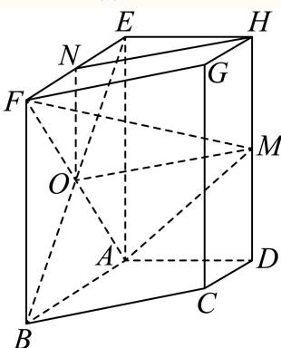
(2) 因为异面直线 A B E H A B E H A BE H π 2 \frac { \pi } { 2 } 2 π A D / / E H A D / / E H A D // E H
所以 ∠ B A D \angle B A D ∠ B A D ∠ B A D = π 2 \angle B A D = \frac { \pi } { 2 } ∠ B A D = 2 π ∣ A B ⊥ A D | A B \bot A D ∣ A B ⊥ A D ζ E A ⊥ \zeta E A \bot ζE A ⊥ A B C D A B C D A BC D
如图建立空间直角坐标系，则A (0, 0, 0)，N (1, 0, 2)，F (2, 0, 2)，M (0, 1, 1)，
所以 A N = ( 1 , 0 , 2 ) \stackrel { } { A N } = ( 1 , 0 , 2 ) A N = ( 1 , 0 , 2 ) A F = ( 2 , 0 , 2 ) \stackrel { } { A F } = ( 2 , 0 , 2 ) A F = ( 2 , 0 , 2 ) A M ⟶ = ( 0 , 1 , 1 ) \stackrel { \longrightarrow } { A M } = ( 0 , 1 , 1 ) A M ⟶ = ( 0 , 1 , 1 )
设平面AFM的法向量为 n ⃗ = ( x , y , z ) \vec { n } = ( x , y , z ) n = ( x , y , z ) { n ⃗ ⋅ A F → = 2 x + 2 z = 0 n ⃗ ⋅ A M → = y + z = 0 \left\{ { \begin{array} { l } { { \vec { n } } \cdot { \overrightarrow { A F } } = 2 x + 2 z = 0 } \\ { { \vec { n } } \cdot { \overrightarrow { A M } } = y + z = 0 } \end{array} } \right. { n ⋅ A F = 2 x + 2 z = 0 n ⋅ A M = y + z = 0 χ n → = ( 1 , 1 , − 1 ) \overrightarrow { \chi _ { n } } = \left( 1 , 1 , - 1 \right) χ n = ( 1 , 1 , − 1 )
设直线AN与平面AFM所成角为θ，则 sin θ = ∣ A N → ⋅ n → ∣ ∣ A N → ∣ ⋅ ∣ n → ∣ = 1 3 × 5 = 15 15 . \sin \theta = { \frac { \left| { \overrightarrow { A N } } \cdot { \overrightarrow { n } } \right| } { \left| { \overrightarrow { A N } } \right| \cdot \left| { \overrightarrow { n } } \right| } } = { \frac { 1 } { { \sqrt { 3 } } \times { \sqrt { 5 } } } } = { \frac { \sqrt { 1 5 } } { 1 5 } } . sin θ = A N ⋅ ∣ n ∣ A N ⋅ n = 3 × 5 1 = 15 15 . 15 15 \frac { \sqrt { 1 5 } } { 1 5 } 15 15
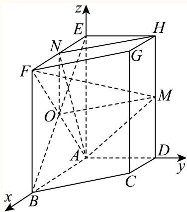
金山 · 第18题 ★★★☆☆ · 教师预估 如图，在四棱锥 P − A B C D P - A B C D P − A BC D ∠ B A D = ∠ C D A = 9 0 ∘ \angle B A D = \angle C D A = 9 0 ^ { \circ } ∠ B A D = ∠ C D A = 9 0 ∘ P A ⊥ P A \bot P A ⊥ A B C D A B C D A BC D P A = A D = D C = 1 , A B = 2 P A = A D = D C = 1 , A B = 2 P A = A D = D C = 1 , A B = 2 C Q / / C Q / / CQ // P A D P A D P A D
考点： （1）中点构造线面平行；（2）等体积法求点面距离。难度依据： 涉及（1）中点构造线面平行；（2）等体积法求点面距离；难度为教师预估，需结合原题条件复核。
核查说明： 依据现有底稿归类，尚未逐页校卷、公式校净或独立数学终审。
展开答案与解析 【解析】
(1) 取PA的中点T，连接 D T , T Q D T , T Q D T , TQ
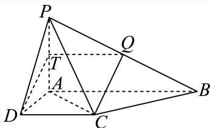
因为 ∠ B A D = ∠ C D A = 9 0 ∘ \angle B A D = \angle C D A = 9 0 ^ { \circ } ∠ B A D = ∠ C D A = 9 0 ∘ A B / / D C , A B = 2 , A D = 1 A B / / D C , ~ A B = 2 , ~ A D = 1 A B // D C , A B = 2 , A D = 1
因为 Γ T , Q \Gamma T , Q Γ T , Q P A , P B P A , P B P A , PB 1 T Q / / A B / / D C , T Q = 1 2 A B = D C , { ^ { 1 } T Q } / / { A B } / / D C , T Q = { \frac { 1 } { 2 } } A B = D C , 1 TQ // A B // D C , TQ = 2 1 A B = D C ,
所以四边形 D C Q T D C Q T D CQT D T / / C Q D T / / C Q D T // CQ
D T ⊂ D T \subset D T ⊂ P A D , C Q L P A D , \ C Q \ \mathcal { L } P A D , CQ L P A D . P A D . P A D . C Q / / C Q / / CQ // P A D P A D P A D
(2) ∠ C D A = 9 0 ∘ \angle C D A = 9 0 ^ { \circ } ∠ C D A = 9 0 ∘ A C = A D 2 + D C 2 = 2 , A C = { \sqrt { A D ^ { 2 } + D C ^ { 2 } } } = { \sqrt { 2 } } , A C = A D 2 + D C 2 = 2 ,
P A ⊥ P A \bot P A ⊥ A B C D , A D , A C ⊂ A B C D , A D , A C \subset A BC D , A D , A C ⊂ A B C D A B C D A BC D P A ⊥ A D , P A ⊥ A C P A \bot A D , P A \bot A C P A ⊥ A D , P A ⊥ A C
S △ P A C = 1 2 ∣ A C ∣ × ∣ P A ∣ = 1 2 × 2 × 1 = 2 2 , S △ A C D = 1 2 × ∣ D C ∣ × ∣ A D ∣ = 1 2 ,
S _ {\triangle P A C} = \frac {1}{2} | A C | \times | P A | = \frac {1}{2} \times \sqrt {2} \times 1 = \frac {\sqrt {2}}{2}, S _ {\triangle A C D} = \frac {1}{2} \times | D C | \times | A D | = \frac {1}{2},
S △ P A C = 2 1 ∣ A C ∣ × ∣ P A ∣ = 2 1 × 2 × 1 = 2 2 , S △ A C D = 2 1 × ∣ D C ∣ × ∣ A D ∣ = 2 1 ,
设点D到平面PAC的距离为 † , d , ^ { \dag , } d , † , d , V D − P A C = V P − A C D V _ { D - P A C } = V _ { P - A C D } V D − P A C = V P − A C D 1 3 S △ P A C × d = 1 3 S △ A C D × ∣ P A ∣ \frac { 1 } { 3 } S _ { \triangle P A C } \times d = \frac { 1 } { 3 } S _ { \triangle A C D } \times | P A | 3 1 S △ P A C × d = 3 1 S △ A C D × ∣ P A ∣
1 3 × 2 2 × d = 1 3 × 1 2 × 1 { \frac { 1 } { 3 } } \times { \frac { \sqrt { 2 } } { 2 } } \times d = { \frac { 1 } { 3 } } \times { \frac { 1 } { 2 } } \times 1 3 1 × 2 2 × d = 3 1 × 2 1 × 1 d = 2 2 d = { \frac { \sqrt { 2 } } { 2 } } d = 2 2
所以点D到平面PAC的距离为 2 2 \frac { \sqrt { 2 } } { 2 } 2 2
长宁 · 第18题 ★★★★☆ · 教师预估 本题资料或解析有待核事项，预览不可作为已审定成品。
如图所示，四棱柱 A B C D − A 1 B 1 C 1 D 1 A B C D - A _ { 1 } B _ { 1 } C _ { 1 } D _ { 1 } A BC D − A 1 B 1 C 1 D 1 1 的底面ABCD是正方形，O是底面的中心， A 1 O ⊥ A _ { 1 } O \bot A 1 O ⊥ A B C D , A B = A A 1 = 2 A B C D , A B = A A _ { 1 } = { \sqrt { 2 } } A BC D , A B = A A 1 = 2 A 1 C ⊥ A _ { 1 } C \bot A 1 C ⊥ B D D 1 B 1 B D D _ { 1 } B _ { 1 } B D D 1 B 1 O A 1 O A _ { 1 } O A 1 1 与平面 A A 1 B A A _ { 1 } B A A 1 B
考点： （1）证明线面垂直；（2）空间向量或体积法求线面角。难度依据： 棱柱线面垂直与线面角；（1）证明线面垂直；（2）空间向量或体积法求线面角
核查说明： 仅修复所列OCR公式及其定界符错位；原解数学疑点和其他可渲染错识未因此消除。
展开答案与解析 【解析】
(1) 因为ABCD是正方形，所以 A C ⊥ B D , O A = O C = 1 A C \bot B D , O A = O C = 1 A C ⊥ B D , O A = OC = 1
因为 A 1 O − A _ { 1 } O _ { - } A 1 O − A B C D A B C D A BC D
所以 A 1 O ⊥ B D A _ { 1 } O \bot B D A 1 O ⊥ B D A 1 O ∩ A C = O , A 1 O , A C A _ { 1 } O \cap A C = O , A _ { 1 } O , A C A 1 O ∩ A C = O , A 1 O , A C A A 1 C N A A _ { 1 } C \mathbb { N } A A 1 C N
所以 B D ⊥ B D \perp B D ⊥ A A 1 C , A 1 C A A _ { 1 } C , A _ { 1 } C A A 1 C , A 1 C A A 1 C N A A _ { 1 } C \mathbb { N } A A 1 C N
所以 B D ⊥ A 1 C B D \bot A _ { 1 } C B D ⊥ A 1 C
由 A A 1 = 2 , O A = O C = 1 , A 1 O ⊥ A A _ { 1 } = \sqrt { 2 } , O A = O C = 1 , A _ { 1 } O \bot A A 1 = 2 , O A = OC = 1 , A 1 O ⊥ A B C D A B C D A BC D
可得 A 1 O = 1 , A 1 C = 2 A _ { 1 } O = 1 , A _ { 1 } C = { \sqrt { 2 } } A 1 O = 1 , A 1 C = 2
所以 A A 1 2 + A 1 C 2 = A C 2 A A _ { 1 } ^ { 2 } + A _ { 1 } C ^ { 2 } = A C ^ { 2 } A A 1 2 + A 1 C 2 = A C 2 A A 1 ⊥ A 1 C , A A _ { 1 } \bot A _ { 1 } C , A A 1 ⊥ A 1 C ,
因为 A A 1 / / B B 1 A A _ { 1 } / / B B _ { 1 } A A 1 // B B 1 B B 1 ⊥ A 1 C B B _ { 1 } \bot A _ { 1 } C B B 1 ⊥ A 1 C
B B 1 B B _ { 1 } B B 1 B D ′ B D ' B D ′ B D D 1 B 1 B D D _ { 1 } B _ { 1 } B D D 1 B 1 B B 1 ∩ B D = B B B _ { 1 } \cap B D = B B B 1 ∩ B D = B
所以 A 1 C ⊥ A _ { 1 } C \bot A 1 C ⊥ B D D 1 B 1 B D D _ { 1 } B _ { 1 } B D D 1 B 1
(2) 方法1：设点O到平面 A A 1 A A _ { 1 } A A 1
V O − A 1 A B = 1 3 ⋅ S A O B ⋅ O A 1 = 1 3 ⋅ S A A 1 B ⋅ h
V _ {O - A _ {1} A B} = \frac {1}{3} \cdot S _ {A O B} \cdot O A _ {1} = \frac {1}{3} \cdot S _ {A A _ {1} B} \cdot h
V O − A 1 A B = 3 1 ⋅ S A OB ⋅ O A 1 = 3 1 ⋅ S A A 1 B ⋅ h
由题可知 ∣ O A 1 = 1 , S A O B = 1 2 , S A A 1 B = 1 2 × 2 × 2 × 3 2 = 3 2 | O A _ { 1 } = 1 , S _ { A O B } = { \frac { 1 } { 2 } } , S _ { A A 1 B } = { \frac { 1 } { 2 } } \times { \sqrt { 2 } } \times { \sqrt { 2 } } \times { \frac { \sqrt { 3 } } { 2 } } = { \frac { \sqrt { 3 } } { 2 } } ∣ O A 1 = 1 , S A OB = 2 1 , S AA 1 B = 2 1 × 2 × 2 × 2 3 = 2 3
所以 h = 1 × 1 3 = 3 3 h = { \frac { 1 \times 1 } { \sqrt { 3 } } } = { \frac { \sqrt { 3 } } { 3 } } h = 3 1 × 1 = 3 3
得直线 O A 1 O A _ { 1 } O A 1 A A 1 B A A _ { 1 } B A A 1 B θ = h O A 1 = 3 3 \theta = \frac { h } { O A _ { 1 } } = \frac { \sqrt { 3 } } { 3 } θ = O A 1 h = 3 3
方法2：（建系）
以O为原点，射线 ; O A , O B , O A 1 ; O A , ~ O B , ~ O A _ { 1 } ; O A , OB , O A 1
可得 A ( 1 , 0 , 0 ) , B ( 0 , 1 , 0 ) , A 1 ( 0 , 0 , 1 ) A \left( 1 , 0 , 0 \right) , B \left( 0 , 1 , 0 \right) , A _ { 1 } \left( 0 , 0 , 1 \right) A ( 1 , 0 , 0 ) , B ( 0 , 1 , 0 ) , A 1 ( 0 , 0 , 1 )
则 ∣ O A 1 → = ( 0 , 0 , 1 ) , A A 1 → = ( − 1 , 0 , 1 ) , A B → = ( − 1 , 1 , 0 ) \overrightarrow { \vert O A _ { 1 } } = ( 0 , 0 , 1 ) , \overrightarrow { A A _ { 1 } } = ( - 1 , 0 , 1 ) , \overrightarrow { A B } = ( - 1 , 1 , 0 ) ∣ O A 1 = ( 0 , 0 , 1 ) , A A 1 = ( − 1 , 0 , 1 ) , A B = ( − 1 , 1 , 0 )
设平面 A A 1 A A _ { 1 } A A 1 n ⃗ = ( x , y , z ) \vec { n } = ( x , y , z ) n = ( x , y , z )
则 { n ⃗ ⋅ A A 1 → = − x + z = 0 , n ⃗ ⋅ A B → = − x + y = 0. \begin{cases}\vec n\cdot\overrightarrow{AA_1}=-x+z=0,\\\vec n\cdot\overrightarrow{AB}=-x+y=0.\end{cases} { n ⋅ A A 1 = − x + z = 0 , n ⋅ A B = − x + y = 0. x = 1 x = 1 x = 1 n ⃗ = ( 1 , 1 , 1 ) { \vec { n } } = ( 1 , 1 , 1 ) n = ( 1 , 1 , 1 )
直线 ; O A 1 ; O A _ { 1 } ; O A 1 A A 1 I A A _ { 1 } I A A 1 I B 所成角θ 的正弦值等于向量 O A 1 → \overrightarrow { O A _ { 1 } } O A 1 → n 的夹角余弦值的绝对
sin θ = ∣ cos ⟨ O A 1 → , n → ⟩ ∣ = ∣ O A 1 → ⋅ n → ∣ O A 1 → ∣ ⋅ ∣ n → ∣ ∣ = 1 3 = 3 3 .
\sin \theta = | \cos \left\langle \overrightarrow {O A _ {1}}, \overrightarrow {n} \right\rangle | = \left| \frac {\overrightarrow {O A _ {1}} \cdot \overrightarrow {n}}{| \overrightarrow {O A _ {1}} | \cdot | \overrightarrow {n} |} \right| = \frac {1}{\sqrt {3}} = \frac {\sqrt {3}}{3}.
sin θ = ∣ cos ⟨ O A 1 , n ⟩ ∣ = ∣ O A 1 ∣ ⋅ ∣ n ∣ O A 1 ⋅ n = 3 1 = 3 3 .
闵行 · 第17题 ★★★★☆ · 教师预估 在直三棱柱 A B C − A 1 B 1 C 1 A B C - A _ { 1 } B _ { 1 } C _ { 1 } A BC − A 1 B 1 C 1 A A 1 = 3 A A _ { 1 } = 3 A A 1 = 3 ∠ B A C = 9 0 ∘ \angle B A C = 9 0 ^ { \circ } ∠ B A C = 9 0 ∘ A 1 C : A _ { 1 } C _ { : } A 1 C : A 1 C A _ { 1 } C A 1 C E M / / E M / / EM // A 1 A B B 1 A _ { 1 } A B B _ { 1 } A 1 A B B 1 A 1 − B C − A A _ { 1 } - B C - A A 1 − BC − A
考点： （1）中位线证明线面平行；（2）空间法向量求二面角。难度依据： 棱柱线面平行与二面角；（1）中位线证明线面平行；（2）空间法向量求二面角
展开答案与解析 【解析】
(1) 证明：如图所示：
连接 A 1 B , A _ { 1 } B , A 1 B , A 1 C A _ { 1 } C A 1 C
所以 A 1 B / / M E A _ { 1 } B / / M E A 1 B // ME A 1 B A _ { 1 } B A 1 B A 1 A B B 1 A _ { 1 } A B B _ { 1 } A 1 A B B 1 M E ∉ M E \notin ME ∈ / A 1 A B B 1 A _ { 1 } A B B _ { 1 } A 1 A B B 1
所以直线 E M / / ⋅ ⃗ E M / / { \vec { \cdot } } EM // ⋅ A 1 A B B 1 A _ { 1 } A B B _ { 1 } A 1 A B B 1
(2) 建立如图所示空间直角坐标系，
则 ∣ A 1 ( 0 , 0 , 3 ) , B ( 2 , 0 , 0 ) , C ( 0 , 2 , 0 ) \left| A _ { 1 } ( 0 , 0 , 3 ) , B ( 2 , 0 , 0 ) , C ( 0 , 2 , 0 ) \right. ∣ A 1 ( 0 , 0 , 3 ) , B ( 2 , 0 , 0 ) , C ( 0 , 2 , 0 )
所以 ⋅ B C → = ( − 2 , 2 , 0 ) , B A 1 → = ( − 2 , 0 , 3 ) , \overrightarrow { \cdot B C } = ( - 2 , 2 , 0 ) , \overrightarrow { B A _ { 1 } } = ( - 2 , 0 , 3 ) , ⋅ BC = ( − 2 , 2 , 0 ) , B A 1 = ( − 2 , 0 , 3 ) ,
设平面 A 1 B C A _ { 1 } B C A 1 BC m ⃗ = ( x , y , z ) \vec { m } = ( x , y , z ) m = ( x , y , z )
{ B C → ⋅ m → = 0 B A 1 → ⋅ m → = 0 \left\{ \begin{array} { l l } { \overrightarrow { B C } \cdot \overrightarrow { m } = 0 } \\ { \overrightarrow { B A _ { 1 } } \cdot \overrightarrow { m } = 0 } \end{array} \right. { BC ⋅ m = 0 B A 1 ⋅ m = 0 { − 2 x + 2 y = 0 − 2 x + 3 z = 0 \left\{ { \begin{array} { l } { - 2 x + 2 y = 0 } \\ { - 2 x + 3 z = 0 } \end{array} } \right. { − 2 x + 2 y = 0 − 2 x + 3 z = 0
令 x = 1 x = 1 x = 1 y = 1 , z = 2 3 y = 1 , z = \frac { 2 } { 3 } y = 1 , z = 3 2 m ⃗ = ( 1 , 1 , 2 3 ) { \vec { m } } = \left( 1 , 1 , { \frac { 2 } { 3 } } \right) m = ( 1 , 1 , 3 2 )
易知平面ABC的一个法向量为： n = ( 0 , 0 , 1 ) \stackrel { } { n } = ( 0 , 0 , 1 ) n = ( 0 , 0 , 1 )
设二面角 A 1 − B C − A A _ { 1 } - B C - A A 1 − BC − A
→m ⋅ →n √22 则 cos θ = cos ⟨→ m,→ n⟩ = → m ⋅ →n 11
二面角 A 1 − B C − A A _ { 1 } - B C - A A 1 − BC − A arccos 22 11 \operatorname { a r c c o s } { \frac { \sqrt { 2 2 } } { 1 1 } } arccos 11 22
静安 · 第15题 ★★★★☆ · 教师预估 我国古代数学著作《九章算术》中将四个面都是直角三角形的空间四面体叫做“鳖臑”.如图是一个水平放置的 △ A B C , C D ⊥ A B , ∠ A = 3 0 ∘ , ∠ B = 4 5 ∘ \triangle A B C , C D \bot A B , \angle A = 3 0 ^ { \circ } , \angle B = 4 5 ^ { \circ } △ A BC , C D ⊥ A B , ∠ A = 3 0 ∘ , ∠ B = 4 5 ∘ R t △ A C D % ˙ C D \begin{array} { r } { \mathrm { R t } \triangle A C D \dot { \% } C D } \end{array} Rt △ A C D % ˙ C D
A. 6 0 ∘ 6 0 ^ { \circ } 6 0 ∘
B. 9 0 ∘ 9 0 ^ { \circ } 9 0 ∘
C. arctan 2 \arctan 2 arctan 2
D. arccos 3 3 \operatorname { a r c c o s } { \frac { \sqrt { 3 } } { 3 } } arccos 3 3
考点： 利用各面直角约束分类求二面角。难度依据： 四面体折叠与二面角；利用各面直角约束分类求二面角
展开答案与解析 【答案】D
【解析】
设CD = 1，根据题意求出四面体的棱长，二面角A′ −CD−B的平面角为 ∠ A ′ D B \angle A ^ { \prime } D B ∠ A ′ D B ∠ A ′ D B \angle A ^ { \prime } D B ∠ A ′ D B
△ A B C \triangle A B C △ A BC C D ⊥ A B , ∠ A = 3 0 ∘ , ∠ B = 4 5 ∘ C D \bot A B , \angle A = 3 0 ^ { \circ } , \angle B = 4 5 ^ { \circ } C D ⊥ A B , ∠ A = 3 0 ∘ , ∠ B = 4 5 ∘
不妨设 C D = 1 C D = 1 C D = 1 B D = 1 , B C = 2 , A D = 3 , A C = 2 B D = 1 , B C = \sqrt { 2 } , A D = \sqrt { 3 } , A C = 2 B D = 1 , BC = 2 , A D = 3 , A C = 2
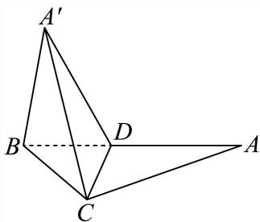
空间四面体 A ′ B C D A ^ { \prime } B C D A ′ BC D △ A ′ B C \triangle A ^ { \prime } B C △ A ′ BC ∣ △ A ′ B D | \triangle A ^ { \prime } B D ∣△ A ′ B D
若 A ′ B > A ′ D A ^ { \prime } B > A ^ { \prime } D A ′ B > A ′ D R t △ A ′ B D ∣ \mathrm { R t } \triangle A ^ { \prime } B D ^ { \scriptscriptstyle | } Rt △ A ′ B D ∣ ∠ A ′ D B = 9 0 ∘ \angle A ^ { \prime } D B = 9 0 ^ { \circ } ∠ A ′ D B = 9 0 ∘ A ′ B = 2 A ^ { \prime } B = 2 A ′ B = 2
此时 △ A ′ B C \triangle A ^ { \prime } B C △ A ′ BC
所以 A ′ B < A ′ D , A ^ { \prime } B < A ^ { \prime } D , A ′ B < A ′ D , R t △ A ′ B D 1 \mathrm { R t } \triangle A ^ { \prime } B D ^ { \scriptscriptstyle 1 } Rt △ A ′ B D 1 ∠ A ′ B D = 9 0 ∘ \angle A ^ { \prime } B D = 9 0 ^ { \circ } ∠ A ′ B D = 9 0 ∘ A ′ B = 2 A ^ { \prime } B = { \sqrt { 2 } } A ′ B = 2
此时满足 △ A ′ B C \triangle A ^ { \prime } B C △ A ′ BC ∠ A ′ B C = 9 0 ∘ \angle A ^ { \prime } B C = 9 0 ^ { \circ } ∠ A ′ BC = 9 0 ∘
由 A ′ D ⊥ C D , B D ⊥ C D A ^ { \prime } D \bot C D , B D \bot C D A ′ D ⊥ C D , B D ⊥ C D ∠ A ′ D B \angle A ^ { \prime } D B ∠ A ′ D B
R t △ A ′ B D \mathrm { R t } \triangle A ^ { \prime } B D Rt △ A ′ B D tan ∠ A ′ D B = 2 \tan \angle A ^ { \prime } D B = \sqrt { 2 } tan ∠ A ′ D B = 2 cos ∠ A ′ D B = 1 3 = 3 3 , \cos \angle A ^ { \prime } D B = \frac { 1 } { \sqrt { 3 } } = \frac { \sqrt { 3 } } { 3 } , cos ∠ A ′ D B = 3 1 = 3 3 ,
所以二面角A′ − CD − B的大小为 arccos 3 3 \operatorname { a r c c o s } { \frac { \sqrt { 3 } } { 3 } } arccos 3 3
故选：D.
静安 · 第16题 ★★☆☆☆ · 教师预估 在四棱锥 P − A B C D P - A B C D P − A BC D A B → = ( 4 , − 2 , 3 ) , A D → = ( − 4 , 1 , 0 ) , A P → = ( − 6 , 2 , − 8 ) \overrightarrow { A B } = ( 4 , - 2 , 3 ) , \overrightarrow { A D } = ( - 4 , 1 , 0 ) , \overrightarrow { A P } = ( - 6 , 2 , - 8 ) A B = ( 4 , − 2 , 3 ) , A D = ( − 4 , 1 , 0 ) , A P = ( − 6 , 2 , − 8 )
A. 4
B. 3
C. 2
D. 1
考点： 法向量与投影求点面距离。难度依据： 法向量求棱锥高度；法向量与投影求点面距离
展开答案与解析 【答案】C
【解析】
求出平面ABCD的一个法向量，再利用点到平面的距离公式即可得到答案设平面ABCD 的一个法向量 i ⃗ n ⃗ = ( x , y , z ) \vec { \mathfrak { i } } \vec { n } = ( x , y , z ) i n = ( x , y , z )
则 { n ⃗ ⋅ A B → = 4 x − 2 y + 3 z = 0 n ⃗ ⋅ A D → = − 4 x + y = 0 \left\{ { \begin{array} { l } { { \vec { n } } \cdot { \overrightarrow { A B } } = 4 x - 2 y + 3 z = 0 } \\ { { \vec { n } } \cdot { \overrightarrow { A D } } = - 4 x + y = 0 } \end{array} } \right. { n ⋅ A B = 4 x − 2 y + 3 z = 0 n ⋅ A D = − 4 x + y = 0 y = 12 , y = 1 2 , y = 12 , x = 3 , z = 4 x = 3 , z = 4 x = 3 , z = 4 Δ n ⃗ = ( 3 , 12 , 4 ) \vec { \mathrm { \Delta } n } = ( 3 , 1 2 , 4 ) Δ n = ( 3 , 12 , 4 )
所以该四棱锥的高 h = ∣ A P ⋅ n → ∣ → ∣ n → ∣ = ∣ − 6 × 3 + 12 × 2 − 8 × 4 ∣ 3 2 + 1 2 2 + 4 2 = 2. h = \frac { \overrightarrow { | A P \cdot \overrightarrow { n } | } } { \vert \overrightarrow { n } \vert } = \frac { \vert - 6 \times 3 + 1 2 \times 2 - 8 \times 4 \vert } { \sqrt { 3 ^ { 2 } + 1 2 ^ { 2 } + 4 ^ { 2 } } } = 2 . h = ∣ n ∣ ∣ A P ⋅ n ∣ = 3 2 + 1 2 2 + 4 2 ∣ − 6 × 3 + 12 × 2 − 8 × 4∣ = 2.
故选：C.
三、解答题
静安 · 第19题 ★★★★☆ · 教师预估 如图所示，正三棱锥A−BCD的侧面是边长为2的正三角形.1 ◯ C D / / . \textcircled { 1 } C D / / . 1 ◯ C D //.
考点： （1）求高与体积；（2）①证明线面平行②证明截面正方形。难度依据： 正四面体体积与截面；（1）求高与体积；（2）①证明线面平行②证明截面正方形
展开答案与解析 【解析】
(1) 由正三棱锥A−BCD的侧面是边长为2的正三角形，得正三棱锥A−BCD为正四面体，取正 △ B C D \triangle B C D △ BC D A O , B O A O , B O A O , BO A O ⊥ A O \bot A O ⊥ B C D B C D BC D
M是CD的中点， A M = B M = 3 A M = B M = { \sqrt { 3 } } A M = BM = 3 O M = 1 3 B M = 3 3 O M = { \frac { 1 } { 3 } } B M = { \frac { \sqrt { 3 } } { 3 } } OM = 3 1 BM = 3 3
A O = A M 2 − O M 2 = 2 6 3 ,
A O = \sqrt {A M ^ {2} - O M ^ {2}} = \frac {2 \sqrt {6}}{3},
A O = A M 2 − O M 2 = 3 2 6 ,
所以正三棱锥 A − B C D A - B C D A − BC D V = 1 3 S △ B C D ⋅ A O = 1 3 × 1 2 × 2 × 3 × 2 6 3 = 2 2 3 V = { \frac { 1 } { 3 } } S _ { \triangle B C D } \cdot A O = { \frac { 1 } { 3 } } \times { \frac { 1 } { 2 } } \times 2 \times { \sqrt { 3 } } \times { \frac { 2 { \sqrt { 6 } } } { 3 } } = { \frac { 2 { \sqrt { 2 } } } { 3 } } V = 3 1 S △ BC D ⋅ A O = 3 1 × 2 1 × 2 × 3 × 3 2 6 = 3 2 2
(2) ①由 E , F . E , F ^ { . } E , F . E F / / C D : E F / / C D _ { : } EF // C D : E F ⊂ E F \subset EF ⊂ C D ∉ C D \notin C D ∈ / E F G E F G EFG C D / / C D / / C D // E F G E F G EFG
②由平面 E F G E F G EFG E F G ∩ E F G \cap EFG ∩ B C D = G H B C D = G H BC D = G H C D / / C D / / C D // E F G E F G EFG
C D ⊂ C D \subset C D ⊂ B C D , B C D , BC D , G H / / C D : G H / / C D _ { : } G H // C D :
因此 E G / / A B / / F H E G / / A B / / F H EG // A B // F H E F / / G H E F / / G H EF // G H E F H G E F H G EF H G
又 E F = 1 2 C D = 1 2 A B = E G E F = { \frac { 1 } { 2 } } C D = { \frac { 1 } { 2 } } A B = E G EF = 2 1 C D = 2 1 A B = EG ¬ E F H G \neg E F H G ¬ EF H G A M ⊥ C D , B M ⊥ C D A M \bot C D , B M \bot C D A M ⊥ C D , BM ⊥ C D
A M ∩ B M = M , A M , B M ⊂ A M \cap B M = M , A M , B M \subset A M ∩ BM = M , A M , BM ⊂ C D ⊥ C D \perp C D ⊥ A B ⊂ A B \subset A B ⊂
因此 A B ⊥ C D A B \bot C D A B ⊥ C D E G ⊥ G H E G \bot G H EG ⊥ G H
黄浦 · 第14题 ★★★☆☆ · 教师预估 本题资料或解析有待核事项，预览不可作为已审定成品。
若从正方体八个顶点中任取四个顶点分别记为A、B、C、D，则直线AB与CD所成角的大小不可能为（ ）
A. 3 0 ∘ 3 0 ^ { \circ } 3 0 ∘
B. 4 5 ∘ 4 5 ^ { \circ } 4 5 ∘
C. 6 0 ∘ 6 0 ^ { \circ } 6 0 ∘
D. 9 0 ∘ 9 0 ^ { \circ } 9 0 ∘
考点： 分类空间方向并判断可取角度。难度依据： 正方体顶点连线夹角；分类空间方向并判断可取角度
核查说明： 原解列举可实现角后直接断言30度不可能，未给穷尽证明。
展开答案与解析 【答案】A
【解析】
由题意作图，根据正方体的几何性质，利用异面直线的夹角的定义，可得答案.①由题意作图如下：
由图易知 ∣ △ O C D | \triangle { O C D } ∣△ OC D 4 5 ∘ 4 5 ^ { \circ } 4 5 ∘
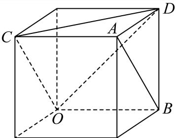
由图易知 △ O C D \triangle O C D △ OC D A B ⊥ A B ^ { \perp } A B ⊥
③由题意作图如下：
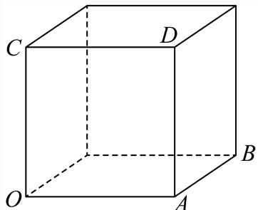
由图易知OA⊥AB，因为 C B / / O A C B / / O A CB // O A 9 0 ∘ 9 0 ^ { \circ } 9 0 ∘ 3 0 ∘ 3 0 ^ { \circ } 3 0 ∘
黄浦 · 第17题 ★★★☆☆ · 教师预估 如图，在正方体ABCD− A 1 B 1 C 1 D 1 A _ { 1 } B _ { 1 } C _ { 1 } D _ { 1 } A 1 B 1 C 1 D 1 B C 1 B C _ { 1 } B C 1 B C 1 ⊥ B C _ { 1 \bot } B C 1⊥
考点： （1）两条相交直线证明线面垂直；（2）投影求线面角。难度依据： 正方体线面垂直与线面角；（1）两条相交直线证明线面垂直；（2）投影求线面角
展开答案与解析 【解析】
(1) 证明：连接 B 1 C , B _ { 1 } C , B 1 C , A B C D − A 1 B 1 C 1 D 1 A B C D - A _ { 1 } B _ { 1 } C _ { 1 } D _ { 1 } A BC D − A 1 B 1 C 1 D 1 B C 1 B C _ { 1 } B C 1
所以E是 B 1 ( B _ { 1 } ( B 1 ( B 1 C ⊥ B C 1 B _ { 1 } C \bot B C _ { 1 } B 1 C ⊥ B C 1 E C ⊥ B C 1 E C \bot B C _ { 1 } EC ⊥ B C 1
因为 D C ⊥ D C \bot D C ⊥ B C C 1 B 1 B C C _ { 1 } B _ { 1 } BC C 1 B 1 B C 1 ⊂ B C _ { 1 } \subset B C 1 ⊂ B C C 1 B 1 B C C _ { 1 } B _ { 1 } BC C 1 B 1
所以 D C ⊥ B C 1 D C \bot B C _ { 1 } D C ⊥ B C 1
又 D C ∩ E C = C , D C , E C ⊂ D C \cap E C = C , D C , E C \subset D C ∩ EC = C , D C , EC ⊂ C D E . C D E . C D E .
所以 B C 1 ⊥ B C _ { 1 \bot } B C 1⊥
(2) 过E作 E F ⊥ B C E F \bot B C EF ⊥ BC D F . D F . D F .
在正方体 A B C D − A 1 B 1 C 1 D 1 ♯ A B C D - A _ { 1 } B _ { 1 } C _ { 1 } D _ { 1 } \sharp A BC D − A 1 B 1 C 1 D 1 ♯ C C 1 − C C _ { 1 - } C C 1 − A B C D A B C D A BC D E F / / C C 1 E F / / C C _ { 1 } EF // C C 1
所以 E F ⊥ E F \bot EF ⊥ A B C D A B C D A BC D
又 D F ⊂ D F \subset D F ⊂ A B C D A B C D A BC D E F ⊥ D F E F \bot D F EF ⊥ D F
所以 ∠ E D F \angle E D F ∠ E D F A B C D A B C D A BC D
由题意，设 C C 1 = C B = C D = 2 a C C _ { 1 } = C B = C D = 2 a C C 1 = CB = C D = 2 a E F = 1 2 C C 1 = a . E F = \frac { 1 } { 2 } C C _ { 1 } = a . EF = 2 1 C C 1 = a .
C F = 1 2 C B = a C F = { \frac { 1 } { 2 } } C B = a CF = 2 1 CB = a D F = 5 a D F = { \sqrt { 5 } } a D F = 5 a
所以在 R t △ D E F \mathrm { R t } \triangle D E F Rt △ D EF tan ∠ E D F = E F D F = a 5 a = 5 5 \tan \angle E D F = { \frac { E F } { D F } } = { \frac { a } { \sqrt { 5 } a } } = { \frac { \sqrt { 5 } } { 5 } } tan ∠ E D F = D F EF = 5 a a = 5 5
故直线DE与平面ABCD所成角的大小是 arctan 5 5 \arctan { \frac { \sqrt { 5 } } { 5 } } arctan 5 5
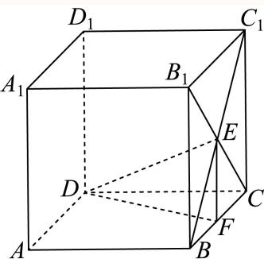
空间坐标、向量表示与轨迹度量 将固定点基底线性表示、等距或对称约束转成空间向量及坐标；动点问题再讨论轨迹、计数或最值。
嘉定 · 第10题 ★★★☆☆ · 教师预估 本题资料或解析有待核事项，预览不可作为已审定成品。
已知空间向量 O B 1 → , O B 2 → , O B 3 → \overrightarrow { O B _ { 1 } } , \overrightarrow { O B _ { 2 } } , \overrightarrow { O B _ { 3 } } O B 1 , O B 2 , O B 3 ∣ A B 1 → ∣ = ∣ A B 2 → ∣ = ∣ A B 3 → ∣ = 1 \left| \overrightarrow { A B _ { 1 } } \right| = \left| \overrightarrow { A B _ { 2 } } \right| = \left| \overrightarrow { A B _ { 3 } } \right| = 1 A B 1 = A B 2 = A B 3 = 1 O P → = O B 1 → + O B 2 → + O B 3 → \overrightarrow { O P } = \overrightarrow { O B _ { 1 } } + \overrightarrow { O B _ { 2 } } + \overrightarrow { O B _ { 3 } } OP = O B 1 + O B 2 + O B 3 ∣ ⟶ A P ⃗ ∣ ≤ 1 \left| \begin{array} { l } { \longrightarrow } \\ { \vec { A P } } \end{array} \right| \le 1 ⟶ A P ≤ 1 O A → \overrightarrow { O A } O A
考点： 空间正交向量数量积与模平方恒等式；等距点约束的空间度量。难度依据： 须将三组距离条件合并消去交叉项
核查说明： 题干与解析已用于人工归类，尚未完成整题公式校净与独立数学终审。；题干末尾将模长写成向量的取值范围；原PDF文字层及解析均有模长线，应回核后修复。；题干与解析已用于人工归类，尚未完成整题公式校净与独立数学终审。；题干末尾将模长写成向量的取值范围；原PDF文字层及解析均有模长线，应回核后修复。
展开答案与解析 【答案】[ 1 , 6 2 ] \left[ 1 , { \frac { \sqrt { 6 } } { 2 } } \right] [ 1 , 2 6 ]
【解析】
根据给定条件，利用空间向量模的意义及数量积的运算律求得 ∣ O A → ∣ 2 = 3 − ∣ A P → ∣ 2 2 | \overrightarrow { O A } | ^ { 2 } = \frac { 3 - | \overrightarrow { A P } | ^ { 2 } } { 2 } ∣ O A ∣ 2 = 2 3 − ∣ A P ∣ 2
由空间向量 ⋅ O B 1 → , O B 2 → , O B 3 → \overrightarrow { { \cdot } O B _ { 1 } } , \overrightarrow { O B _ { 2 } } , \overrightarrow { O B _ { 3 } } ⋅ O B 1 , O B 2 , O B 3 O B 1 → ⋅ O B 2 → = O B 2 → ⋅ O B 3 → = O B 3 → ⋅ O B 1 → = 0 \overrightarrow { O B _ { 1 } } \cdot \overrightarrow { O B _ { 2 } } = \overrightarrow { O B _ { 2 } } \cdot \overrightarrow { O B _ { 3 } } = \overrightarrow { O B _ { 3 } } \cdot \overrightarrow { O B _ { 1 } } = 0 O B 1 ⋅ O B 2 = O B 2 ⋅ O B 3 = O B 3 ⋅ O B 1 = 0
又 AB1 = AB2 = AB3 = 1，OP = OB1 + OB2 + OB3 ，
则3 = |AB1|2 + |AB2|2 + |AB3|2 = (OB1 − OA)2 + (OB2 − OA)2 + (OB3 − OA)2−−→ → → → → → → → →
= 3 ∣ O A ∣ → 2 − 2 O A → ⋅ ( O B 1 → + O B 2 → + O B 3 → ) + ∣ O B 1 ∣ → 2 + ∣ O B 2 ∣ → 2 + ∣ O B 3 ∣ → 2
= 3 \overrightarrow {| O A |} ^ {2} - 2 \overrightarrow {O A} \cdot \left(\overrightarrow {O B _ {1}} + \overrightarrow {O B _ {2}} + \overrightarrow {O B _ {3}}\right) + \overrightarrow {| O B _ {1} |} ^ {2} + \overrightarrow {| O B _ {2} |} ^ {2} + \overrightarrow {| O B _ {3} |} ^ {2}
= 3 ∣ O A ∣ 2 − 2 O A ⋅ ( O B 1 + O B 2 + O B 3 ) + ∣ O B 1 ∣ 2 + ∣ O B 2 ∣ 2 + ∣ O B 3 ∣ 2
= 3 ∣ O A ∣ 2 → − 2 O A → ⋅ O P → + ( O B 1 → + O B 2 → + O B 3 → ) 2 − 2 ( O B 1 → ⋅ O B 2 → + O B 2 → ⋅ O B 3 → + O B 3 → ⋅ O B 1 → )
= 3 \overrightarrow {| O A | ^ {2}} - 2 \overrightarrow {O A} \cdot \overrightarrow {O P} + \left(\overrightarrow {O B _ {1}} + \overrightarrow {O B _ {2}} + \overrightarrow {O B _ {3}}\right) ^ {2} - 2 \left(\overrightarrow {O B _ {1}} \cdot \overrightarrow {O B _ {2}} + \overrightarrow {O B _ {2}} \cdot \overrightarrow {O B _ {3}} + \overrightarrow {O B _ {3}} \cdot \overrightarrow {O B _ {1}}\right)
= 3 ∣ O A ∣ 2 − 2 O A ⋅ OP + ( O B 1 + O B 2 + O B 3 ) 2 − 2 ( O B 1 ⋅ O B 2 + O B 2 ⋅ O B 3 + O B 3 ⋅ O B 1 )
= 3 ∣ O A → ∣ 2 − 2 O A → ⋅ O P → + ∣ O P → ∣ 2 = 2 ∣ O A → ∣ 2 + ∣ O A → ∣ 2 − 2 O A → ⋅ O P → + ∣ O P → ∣ 2
= 3 | \overrightarrow {O A} | ^ {2} - 2 \overrightarrow {O A} \cdot \overrightarrow {O P} + | \overrightarrow {O P} | ^ {2} = 2 | \overrightarrow {O A} | ^ {2} + | \overrightarrow {O A} | ^ {2} - 2 \overrightarrow {O A} \cdot \overrightarrow {O P} + | \overrightarrow {O P} | ^ {2}
= 3∣ O A ∣ 2 − 2 O A ⋅ OP + ∣ OP ∣ 2 = 2∣ O A ∣ 2 + ∣ O A ∣ 2 − 2 O A ⋅ OP + ∣ OP ∣ 2
= 2 ∣ O A → ∣ 2 + ( O A → − O P → ) 2 = 2 ∣ O A → ∣ 2 + ∣ A P → ∣ 2 = 2 | \overrightarrow { O A } | ^ { 2 } + \left( \overrightarrow { O A } - \overrightarrow { O P } \right) ^ { 2 } = 2 | \overrightarrow { O A } | ^ { 2 } + | \overrightarrow { A P } | ^ { 2 } = 2∣ O A ∣ 2 + ( O A − OP ) 2 = 2∣ O A ∣ 2 + ∣ A P ∣ 2 ≤ ∣ A P → ∣ ≤ 1 \leq | { \overrightarrow { A P } } | \leq 1 ≤ ∣ A P ∣ ≤ 1
因此 ∣ O A → ∣ 2 = 3 − ∣ A P → ∣ 2 2 ∈ [ 1 , 3 2 ] , ∣ O A → ∣ ∈ [ 1 , 6 2 ] | \overrightarrow { O A } | ^ { 2 } = \frac { 3 - | \overrightarrow { A P } | ^ { 2 } } { 2 } \in \left[ 1 , \frac { 3 } { 2 } \right] , \overrightarrow { | O A } | \in \left[ 1 , \frac { \sqrt { 6 } } { 2 } \right] ∣ O A ∣ 2 = 2 3 − ∣ A P ∣ 2 ∈ [ 1 , 2 3 ] , ∣ O A ∣ ∈ [ 1 , 2 6 ]
所以 O A → \overrightarrow { \ O A } O A [ 1 , 6 2 ] \left[ 1 , { \frac { \sqrt { 6 } } { 2 } } \right] [ 1 , 2 6 ]
故答案为： [ 1 , 6 2 ] \left[ 1 , { \frac { \sqrt { 6 } } { 2 } } \right] [ 1 , 2 6 ]
宝山 · 第15题 ★★★☆☆ · 教师预估 …A B C D − A 1 B 1 C 1 D 1 A B C D - A _ { 1 } B _ { 1 } C _ { 1 } D _ { 1 } A BC D − A 1 B 1 C 1 D 1 C C 1 C C _ { 1 } C C 1 C 1 D 1 C _ { 1 } D _ { 1 } C 1 D 1 P E ⊥ P F P E \bot P F PE ⊥ PF A A 1 A A _ { 1 } A A 1
A. 2 2 \frac { \sqrt { 2 } } { 2 } 2 2
B. 1
C. 2 \sqrt { 2 } 2
D. 2
考点： 空间直角条件与坐标判别。难度依据： 涉及空间直角条件与坐标判别；难度为教师预估，需结合原题条件复核。
核查说明： 依据现有底稿归类，尚未逐页校卷、公式校净或独立数学终审。
展开答案与解析 【答案】A
【解析】
建立空间直角坐标系，设出点P、E、F的坐标，结合已知条件得到方程 n 2 − n + 2 h 2 = 0 n ^ { 2 } - n + 2 h ^ { 2 } = 0 n 2 − n + 2 h 2 = 0
根据已知条件，以D为坐标原点，DA、 D C , D D 1 \mathit { D C } , \ \mathit { D D } _ { 1 } DC , DD 1
设正四棱柱的高为2h，令E (m, 0, 0)，F (0, 1, h)，P (0, n, 2h)，
所以 P E → = ( m , − n , − 2 h ) , P F → = ( 0 , 1 − n , − h ) \overrightarrow { P E } = ( m , - n , - 2 h ) , \overrightarrow { P F } = ( 0 , 1 - n , - h ) PE = ( m , − n , − 2 h ) , PF = ( 0 , 1 − n , − h )
因为 P E ⊥ P F P E \bot P F PE ⊥ PF P E → ⋅ P F → = 0 \overrightarrow { P E } \cdot \overrightarrow { P F } = 0 PE ⋅ PF = 0 − n ( 1 − n ) + ( − 2 h ) ⋅ ( − h ) = 0 - n \left( 1 - n \right) + \left( - 2 h \right) \cdot \left( - h \right) = 0 − n ( 1 − n ) + ( − 2 h ) ⋅ ( − h ) = 0
整理得： n 2 − n + 2 h 2 = 0 n ^ { 2 } - n + 2 h ^ { 2 } = 0 n 2 − n + 2 h 2 = 0 C 1 D 1 C _ { 1 } D _ { 1 } C 1 D 1 P E ⊥ P F . P E \bot P F . PE ⊥ PF .
所以关于 得的方程 n 2 − n + 2 h 2 = 0 n ^ { 2 } - n + 2 h ^ { 2 } = 0 n 2 − n + 2 h 2 = 0
即 Δ = ( − 1 ) 2 − 4 × 1 × 2 h 2 ≥ 0 \Delta = ( - 1 ) ^ { 2 } - 4 \times 1 \times 2 h ^ { 2 } \geq 0 \quad Δ = ( − 1 ) 2 − 4 × 1 × 2 h 2 ≥ 0 1 − 8 h 2 ≥ 0 1 - 8 h ^ { 2 } \ge 0 1 − 8 h 2 ≥ 0 − 2 4 ≤ h ≤ 2 4 - \frac { \sqrt { 2 } } { 4 } \leq h \leq \frac { \sqrt { 2 } } { 4 } − 4 2 ≤ h ≤ 4 2
又因为 h > 0 h > 0 h > 0 0 ˙ < h ≤ 2 4 \dot { 0 } < h \leq \frac { \sqrt { 2 } } { 4 } 0 ˙ < h ≤ 4 2 A A 1 A A _ { 1 } A A 1 2 h = 2 × 2 4 = 2 2 2 h = 2 \times { \frac { \sqrt { 2 } } { 4 } } = { \frac { \sqrt { 2 } } { 2 } } 2 h = 2 × 4 2 = 2 2
崇明 · 第9题 ★☆☆☆☆ · 教师预估 在空间直角坐标系中，点(1,2,3)关 F x O y \operatorname { F } x O y F x O y
考点： 空间点关于坐标平面对称。难度依据： 涉及空间点关于坐标平面对称；难度为教师预估，需结合原题条件复核。
核查说明： 依据现有底稿归类，尚未逐页校卷、公式校净或独立数学终审。
展开答案与解析 【答案】(1, 2, −3).
【解析】
根据空间点关于坐标平面的对称点特征可求对称点的坐标.
点(1, 2, 3)关于xOy平面的对称点的坐标为(1, 2, −3)，
故答案为：(1, 2, −3).
普陀 · 第9题 ★★★☆☆ · 教师预估 本题资料或解析有待核事项，预览不可作为已审定成品。
设λ ∈ R，在如图所示的平行六面体 A B C D − A 1 B 1 C 1 D 1 A B C D - A _ { 1 } B _ { 1 } C _ { 1 } D _ { 1 } A BC D − A 1 B 1 C 1 D 1 1 中， ∠ A 1 A B = ∠ A 1 A D = ∠ B A D = π 3 . \angle A _ { 1 } A B = \angle A _ { 1 } A D = \angle B A D = { \frac { \pi } { 3 } } . ∠ A 1 A B = ∠ A 1 A D = ∠ B A D = 3 π . A A 1 = 2 , A B = A D = 1 A A _ { 1 } = 2 , A B = A D = 1 A A 1 = 2 , A B = A D = 1 M 是棱 C 1 D 1 C _ { 1 } D _ { 1 } C 1 D 1 → → λ 1 N = λ A 1 D 1 ‾ \xrightarrow { \xrightarrow { } } { \lambda _ { 1 } N } = \overline { { \lambda A _ { 1 } D _ { 1 } } } λ 1 N = λ A 1 D 1 A M ⟶ . C N ⟶ = 2 \stackrel { \longrightarrow } { A M } . \stackrel { \longrightarrow } { C N } = 2 A M ⟶ . CN ⟶ = 2 λ 的值为
考点： 非正交空间基底的数量积展开；平行六面体中点与棱上点的向量表示。难度依据： 基底不正交需逐项计入夹角
核查说明： 仅修复所列OCR公式及其定界符错位；原解数学疑点和其他可渲染错识未因此消除。；题干与解析已用于人工归类，尚未完成整题公式校净与独立数学终审。；题干点N的向量等式严重错识，原解指向A1N=λA1D1，须视觉回核后修复。；仅修复所列OCR公式及其定界符错位；原解数学疑点和其他可渲染错识未因此消除。；题干与解析已用于人工归类，尚未完成整题公式校净与独立数学终审。；题干点N的向量等式严重错识，原解指向A1N=λA1D1，须视觉回核后修复。
展开答案与解析 【答案】1 3 \frac 1 3 3 1
【解析】
以 A B → , A D → , A A 1 → \overrightarrow { A B } , \overrightarrow { A D } , \overrightarrow { A A _ { 1 } } A B , A D , A A 1 A M → , C N → \overrightarrow{AM},\overrightarrow{CN} A M , CN
A 1 N → = λ A 1 D 1 → = λ A D → ,
\overrightarrow {A _ {1} N} = \lambda \overrightarrow {A _ {1} D _ {1}} = \lambda \overrightarrow {A D},
A 1 N = λ A 1 D 1 = λ A D ,
A M → = A D 1 → + D 1 M → = A D → + A A 1 → + 1 2 A B → ,
\overrightarrow {A M} = \overrightarrow {A D _ {1}} + \overrightarrow {D _ {1} M} = \overrightarrow {A D} + \overrightarrow {A A _ {1}} + \frac {1}{2} \overrightarrow {A B},
A M = A D 1 + D 1 M = A D + A A 1 + 2 1 A B ,
C N → = A N → − A C → = A A 1 → + A 1 N → − A B → − A D →
\overrightarrow {C N} = \overrightarrow {A N} - \overrightarrow {A C} = \overrightarrow {A A _ {1}} + \overrightarrow {A _ {1} N} - \overrightarrow {A B} - \overrightarrow {A D}
CN = A N − A C = A A 1 + A 1 N − A B − A D
= A A 1 → + λ A 1 D 1 → − A B → − A D → = A A 1 → + ( λ − 1 ) A D → − A B → ,
= \overrightarrow {A A _ {1}} + \overrightarrow {\lambda A _ {1} D _ {1}} - \overrightarrow {A B} - \overrightarrow {A D} = \overrightarrow {A A _ {1}} + (\lambda - 1) \overrightarrow {A D} - \overrightarrow {A B},
= A A 1 + λ A 1 D 1 − A B − A D = A A 1 + ( λ − 1 ) A D − A B ,
A M → ⋅ C N → = ( A D → + A A 1 → + 1 2 A B → ) ⋅ ( A A 1 → + ( λ − 1 ) A D → − A B → ) = 2 ,
\overrightarrow {A M} \cdot \overrightarrow {C N} = \left(\overrightarrow {A D} + \overrightarrow {A A _ {1}} + \frac {1}{2} \overrightarrow {A B}\right) \cdot \left(\overrightarrow {A A _ {1}} + (\lambda - 1) \overrightarrow {A D} - \overrightarrow {A B}\right) = 2,
A M ⋅ CN = ( A D + A A 1 + 2 1 A B ) ⋅ ( A A 1 + ( λ − 1 ) A D − A B ) = 2 ,
A D → ⋅ A A 1 → + ( λ − 1 ) A D → 2 − A D → ⋅ A B → + A A 1 → 2 + ( λ − 1 ) A D → ⋅ A A 1 → − A A 1 → ⋅ A B → + 1 2 A B → ⋅ A A 1 → +
\overrightarrow {A D} \cdot \overrightarrow {A A _ {1}} + (\lambda - 1) \overrightarrow {A D} ^ {2} - \overrightarrow {A D} \cdot \overrightarrow {A B} + \overrightarrow {A A _ {1}} ^ {2} + (\lambda - 1) \overrightarrow {A D} \cdot \overrightarrow {A A _ {1}} - \overrightarrow {A A _ {1}} \cdot \overrightarrow {A B} + \frac {1}{2} \overrightarrow {A B} \cdot \overrightarrow {A A _ {1}} +
A D ⋅ A A 1 + ( λ − 1 ) A D 2 − A D ⋅ A B + A A 1 2 + ( λ − 1 ) A D ⋅ A A 1 − A A 1 ⋅ A B + 2 1 A B ⋅ A A 1 +
1 2 A B → ⋅ ( λ − 1 ) A D → − 1 2 A B → 2 = 2
\frac {1}{2} \overrightarrow {A B} \cdot (\lambda - 1) \overrightarrow {A D} - \frac {1}{2} \overrightarrow {A B} ^ {2} = 2
2 1 A B ⋅ ( λ − 1 ) A D − 2 1 A B 2 = 2
由 ∣ ∠ A 1 A B = ∠ A 1 A D = ∠ B A D = π 3 , ▽ A A 1 = 2 , A B = A D = 1 , \stackrel { \triangledown } { | \angle A _ { 1 } A B = \angle A _ { 1 } A D = \angle B A D = \frac { \pi } { 3 } , } ~ A A _ { 1 } = 2 , ~ A B = A D = 1 , ∣∠ A 1 A B = ∠ A 1 A D = ∠ B A D = 3 π , ▽ A A 1 = 2 , A B = A D = 1 ,
1 × 2 × 1 2 + ( λ − 1 ) − 1 × 1 × 1 2 + 4 + ( λ − 1 ) × 1 × 2 × 1 2 − 2 × 1 × 1 2 + 1 2 × 1 × 2 × 1 2 + 1 2 ( λ − 1 ) × 1 × 1 × 1 2 − 1 2 × 1 = 2
\begin{array}{l} 1 \times 2 \times \frac {1}{2} + (\lambda - 1) - 1 \times 1 \times \frac {1}{2} + 4 + (\lambda - 1) \times 1 \times 2 \times \frac {1}{2} - 2 \times 1 \times \frac {1}{2} + \frac {1}{2} \times 1 \times 2 \times \frac {1}{2} + \\ \frac {1}{2} (\lambda - 1) \times 1 \times 1 \times \frac {1}{2} - \frac {1}{2} \times 1 = 2 \end{array}
1 × 2 × 2 1 + ( λ − 1 ) − 1 × 1 × 2 1 + 4 + ( λ − 1 ) × 1 × 2 × 2 1 − 2 × 1 × 2 1 + 2 1 × 1 × 2 × 2 1 + 2 1 ( λ − 1 ) × 1 × 1 × 2 1 − 2 1 × 1 = 2
9 4 ( λ − 1 ) + 7 2 = 2 { \frac { 9 } { 4 } } ( \lambda - 1 ) + { \frac { 7 } { 2 } } = 2 4 9 ( λ − 1 ) + 2 7 = 2 λ = 1 3 \lambda = \frac { 1 } { 3 } λ = 3 1
故答案为： 1 3 \frac 1 3 3 1
虹口 · 第15题 ★★★☆☆ · 教师预估 本题资料或解析有待核事项，预览不可作为已审定成品。
已知边长为2的正四面体A−BCD的内切球（球面与四面体四个面都相切的球）的球心为O，若空间中的动点P满足 O P → = x O C → + y O B → + z O D → , x , y , z ∈ [ 0 , 1 ] \overrightarrow { O P } = x \overrightarrow { O C } + y \overrightarrow { O B } + z \overrightarrow { O D } , x , y , z \in [ 0 , 1 ] OP = x OC + y OB + z O D , x , y , z ∈ [ 0 , 1 ]
A. 2 \sqrt { 2 } 2
B. 2 3 \frac { \sqrt { 2 } } { 3 } 3 2
C. 2 3 2 \sqrt { 3 } 2 3
D. 3 3 \frac { \sqrt { 3 } } { 3 } 3 3
考点： 空间向量与平行六面体体积。难度依据： 涉及空间向量与平行六面体体积；难度为教师预估，需结合原题条件复核。
核查说明： 仅修复所列OCR公式及其定界符错位；原解数学疑点和其他可渲染错识未因此消除。；依据现有底稿归类，尚未逐页校卷、公式校净或独立数学终审。
展开答案与解析 【答案】A
【解析】
点P的轨迹是以 ∣ O C ∣ , ∣ O B ∣ , ∣ O D ∣ |OC|,|OB|,|OD| ∣ OC ∣ , ∣ OB ∣ , ∣ O D ∣ ∣ O C ∣ , ∣ O B ∣ | O C | , | O B | ∣ OC ∣ , ∣ OB ∣
空间中的动点P满足 O P → = x O C → + y O B → + z O D → , x , y , z ∈ [ 0 , 1 ] \overrightarrow { O P } = x \overrightarrow { O C } + y \overrightarrow { O B } + z \overrightarrow { O D } , x , y , z \in [ 0 , 1 ] OP = x OC + y OB + z O D , x , y , z ∈ [ 0 , 1 ]
则点P的轨迹是以 ∣ O C ∣ , ∣ O B ∣ , ∣ O D ∣ | O C | , | O B | , | O D | ∣ OC ∣ , ∣ OB ∣ , ∣ O D ∣
将正四面体 A − B C D A - B C D A − BC D A 1 B C 1 D − A B 1 C D 1 ♯ A _ { 1 } B C _ { 1 } D - A B _ { 1 } C D _ { 1 } \sharp A 1 B C 1 D − A B 1 C D 1 ♯
则正四面体 A − B C D A - B C D A − BC D
设正方体的棱长为a，所 ′ a 2 = 2 \ { } ^ { \ ' } a ^ { 2 } = 2 ′ a 2 = 2 ↓ a = 2 \downarrow a = \sqrt { 2 } ↓ a = 2
以 D 1 D _ { 1 } D 1
所以 D ( 0 , 0 , 2 ) , B ( 2 , 2 , 2 ) , C ( 0 , 2 , 0 ) , A ( 2 , 0 , 0 ) , O ( 2 2 , 2 2 , 2 2 ) D \left( 0 , 0 , { \sqrt { 2 } } \right) , B \left( { \sqrt { 2 } } , { \sqrt { 2 } } , { \sqrt { 2 } } \right) , C \left( 0 , { \sqrt { 2 } } , 0 \right) , A \left( { \sqrt { 2 } } , 0 , 0 \right) , O \left( { \frac { { \sqrt { 2 } } } { 2 } } , { \frac { { \sqrt { 2 } } } { 2 } } , { \frac { { \sqrt { 2 } } } { 2 } } \right) D ( 0 , 0 , 2 ) , B ( 2 , 2 , 2 ) , C ( 0 , 2 , 0 ) , A ( 2 , 0 , 0 ) , O ( 2 2 , 2 2 , 2 2 )
O B → = ( 2 2 , 2 2 , 2 2 ) , O C → = ( − 2 2 , 2 2 , − 2 2 ) , B C → = ( − 2 , 0 , − 2 ) .
\overrightarrow {O B} = \left(\frac {\sqrt {2}}{2}, \frac {\sqrt {2}}{2}, \frac {\sqrt {2}}{2}\right), \overrightarrow {O C} = \left(- \frac {\sqrt {2}}{2}, \frac {\sqrt {2}}{2}, - \frac {\sqrt {2}}{2}\right), \overrightarrow {B C} = (- \sqrt {2}, 0, - \sqrt {2}).
OB = ( 2 2 , 2 2 , 2 2 ) , OC = ( − 2 2 , 2 2 , − 2 2 ) , BC = ( − 2 , 0 , − 2 ) .
∣ O B → ∣ = ( 2 2 ) 2 + ( 2 2 ) 2 + ( 2 2 ) 2 = 6 2 ,
\left| \overrightarrow {O B} \right| = \sqrt {\left(\frac {\sqrt {2}}{2}\right) ^ {2} + \left(\frac {\sqrt {2}}{2}\right) ^ {2} + \left(\frac {\sqrt {2}}{2}\right) ^ {2}} = \frac {\sqrt {6}}{2},
OB = ( 2 2 ) 2 + ( 2 2 ) 2 + ( 2 2 ) 2 = 2 6 ,
∣ O C → ∣ = ( − 2 2 ) 2 + ( 2 2 ) 2 + ( − 2 2 ) 2 = 6 2 ,
\left| \overrightarrow {O C} \right| = \sqrt {\left(- \frac {\sqrt {2}}{2}\right) ^ {2} + \left(\frac {\sqrt {2}}{2}\right) ^ {2} + \left(- \frac {\sqrt {2}}{2}\right) ^ {2}} = \frac {\sqrt {6}}{2},
OC = ( − 2 2 ) 2 + ( 2 2 ) 2 + ( − 2 2 ) 2 = 2 6 ,
∣ B C → ∣ = ( − 2 ) 2 + ( − 2 ) 2 = 2 ,
\left| \overrightarrow {B C} \right| = \sqrt {\left(- \sqrt {2}\right) ^ {2} + \left(- \sqrt {2}\right) ^ {2}} = 2,
BC = ( − 2 ) 2 + ( − 2 ) 2 = 2 ,
cos ∠ B O C = ∣ O B → ∣ 2 + ∣ O C → ∣ 2 − ∣ B C → ∣ 2 2 ∣ O B → ∣ ⋅ ∣ O C → ∣ = ( 6 2 ) 2 + ( 6 2 ) 2 − 2 2 2 × 6 2 × 6 2 = − 1 3 ,
\cos \angle B O C = \frac {\left| \overrightarrow {O B} \right| ^ {2} + \left| \overrightarrow {O C} \right| ^ {2} - \left| \overrightarrow {B C} \right| ^ {2}}{2 \left| \overrightarrow {O B} \right| \cdot \left| \overrightarrow {O C} \right|} = \frac {\left(\frac {\sqrt {6}}{2}\right) ^ {2} + \left(\frac {\sqrt {6}}{2}\right) ^ {2} - 2 ^ {2}}{2 \times \frac {\sqrt {6}}{2} \times \frac {\sqrt {6}}{2}} = - \frac {1}{3},
cos ∠ BOC = 2 OB ⋅ OC OB 2 + OC 2 − BC 2 = 2 × 2 6 × 2 6 ( 2 6 ) 2 + ( 2 6 ) 2 − 2 2 = − 3 1 ,
所以 sin ∠ B O C = 1 − cos 2 ∠ B O C = 2 2 3 , \sin \angle B O C = \sqrt { 1 - \cos ^ { 2 } \angle B O C } = \frac { 2 \sqrt { 2 } } { 3 } , sin ∠ BOC = 1 − cos 2 ∠ BOC = 3 2 2 ,
所以 \ ∣ O C ∣ , ∣ O B ∣ \mathbb { \backslash } | O C | , | O B | \∣ OC ∣ , ∣ OB ∣
S = 2 × 1 2 ⋅ ∣ O B → ∣ ⋅ ∣ O C → ∣ sin ∠ B O C = ( 6 2 ) 2 × 2 2 3 = 2 ,
S = 2 \times \frac {1}{2} \cdot \left| \overrightarrow {O B} \right| \cdot \left| \overrightarrow {O C} \right| \sin \angle B O C = \left(\frac {\sqrt {6}}{2}\right) ^ {2} \times \frac {2 \sqrt {2}}{3} = \sqrt {2},
S = 2 × 2 1 ⋅ OB ⋅ OC sin ∠ BOC = ( 2 6 ) 2 × 3 2 2 = 2 ,
设平面BOC的法向量为 ∣ n ∣ ⃗ = ( x , y , z ) \vec { \vert n \vert } = ( x , y , z ) ∣ n ∣ = ( x , y , z )
→ √2 √2 √2 → n ⋅ OB = x + y + z = 0 则 2 2 2 →n ⋅ OC = −→ √2 x + √2 y − √2 = 0 2 2 2
取 x = 1 x = 1 x = 1 y = 0 , z = − 1 y = 0 , z = - 1 y = 0 , z = − 1 n ⃗ = ( 1 , 0 , − 1 ) \vec { n } = ( 1 , 0 , - 1 ) n = ( 1 , 0 , − 1 ) D B → = ( 2 , 2 , 0 ) \overrightarrow { D B } = \left( \sqrt { 2 } , \sqrt { 2 } , 0 \right) D B = ( 2 , 2 , 0 )
又因为点D 到平面BOC 距离为 ι ˙ = ∣ n → ⋅ D B → ∣ ∣ n → ∣ = 2 2 = 1 \dot { \iota } = \frac { \left| \overrightarrow { n } \cdot \overrightarrow { D B } \right| } { \left| \overrightarrow { n } \right| } = \frac { \sqrt { 2 } } { \sqrt { 2 } } = 1 ι ˙ = ∣ n ∣ n ⋅ D B = 2 2 = 1
以 ∣ O C ∣ , ∣ O B ∣ , ∣ O D ∣ | O C | , | O B | , | O D | ∣ OC ∣ , ∣ OB ∣ , ∣ O D ∣ V = S ⋅ d = 2 × 1 = 2 . V = S \cdot d = { \sqrt { 2 } } \times 1 = { \sqrt { 2 } } . V = S ⋅ d = 2 × 1 = 2 .
故选：A.
金山 · 第16题 ★★★★☆ · 教师预估 本题资料或解析有待核事项，预览不可作为已审定成品。
已知三棱锥 A 1 − A 2 A 3 A 4 A _ { 1 } - A _ { 2 } A _ { 3 } A _ { 4 } A 1 − A 2 A 3 A 4 A 1 , A 2 , A 3 , A 4 A _ { 1 } , A _ { 2 } , A _ { 3 } , A _ { 4 } A 1 , A 2 , A 3 , A 4 D = { d ∣ d = ∣ P A i ∣ , i = 1 , 2 , 3 , 4 } D = \{ d | d = | P A _ { i } | , i = 1 , 2 , 3 , 4 \} D = { d ∣ d = ∣ P A i ∣ , i = 1 , 2 , 3 , 4 }
A. 3
B. 6
C. 7
D. 10
考点： 空间点到顶点距离集合的分类。难度依据： 涉及空间点到顶点距离集合的分类；难度为教师预估，需结合原题条件复核。
核查说明： 原解称四个顶点具有对称性，题设并非正四面体；应区分顶点A1与另外三个顶点，核验分情况计数。；依据现有底稿归类，尚未逐页校卷、公式校净或独立数学终审。
展开答案与解析 【答案】D
【解析】
设 d i = ∣ P A i ∣ d _ { i } = | P A _ { i } | d i = ∣ P A i ∣ . a ≠ b , . a \neq b , . a = b , c ≠ e ⋅ c \neq e _ { \cdot } c = e ⋅
设 ⋅ d i = ∣ P A i ∣ \cdot d _ { i } = | P A _ { i } | ⋅ d i = ∣ P A i ∣
①P到两个顶点的距离a一样，到另外两个顶点的距离b一样， a a ≠ b . \boxed { a } a \neq b . a a = b .
由 A 1 , A 2 , A 3 , A 4 A _ { 1 } , A _ { 2 } , A _ { 3 } , A _ { 4 } A 1 , A 2 , A 3 , A 4 ∴ d 1 = d 4 , d 2 = d 3 \therefore d _ { 1 } = d _ { 4 } , d _ { 2 } = d _ { 3 } ∴ d 1 = d 4 , d 2 = d 3
满足题意的P应同时在线段 A 1 A 4 , A 2 A 3 A _ { 1 } A _ { 4 } , A _ { 2 } A _ { 3 } A 1 A 4 , A 2 A 3
即为其中垂面交线与三棱锥表面的交点，如图 P 1 , P 2 P _ { 1 } , P _ { 2 } P 1 , P 2
同理， d 1 = d 2 , d 3 = d 4 d _ { 1 } = d _ { 2 } , d _ { 3 } = d _ { 4 } d 1 = d 2 , d 3 = d 4 [ d 1 = d 3 , d 2 = d 4 \begin{array} { r } { [ d _ { 1 } = d _ { 3 } , d _ { 2 } = d _ { 4 } } \end{array} [ d 1 = d 3 , d 2 = d 4
②P到其中三个顶点的距离c一样，到另一个顶点的距离为e，且 c ≠ e c \neq e c = e
若P到 A 2 , A 3 , A 4 A _ { 2 } , A _ { 3 } , A _ { 4 } A 2 , A 3 , A 4 d 2 = d 3 = d 4 d _ { 2 } = d _ { 3 } = d _ { 4 } d 2 = d 3 = d 4 △ A 2 A 3 A 4 \triangle A _ { 2 } A _ { 3 } A _ { 4 } △ A 2 A 3 A 4 P 3 P _ { 3 } P 3 A 1 A _ { 1 } A 1
若P到 A 1 A _ { 1 } A 1 A 2 , A 3 , A 4 ♯ A _ { 2 } , A _ { 3 } , A _ { 4 } \sharp A 2 , A 3 , A 4 ♯ A 1 , A 2 , A 3 , A 4 A _ { 1 } , A _ { 2 } , A _ { 3 } , A _ { 4 } A 1 , A 2 , A 3 , A 4
不妨讨论 d 1 = d 2 = d 3 \mathscr { d } _ { 1 } = \mathscr { d } _ { 2 } = \mathscr { d } _ { 3 } d 1 = d 2 = d 3 △ A 2 A 3 A 4 \triangle A _ { 2 } A _ { 3 } A _ { 4 } △ A 2 A 3 A 4 P 4 P _ { 4 } P 4
同理， d 1 = d 3 = d 4 κ ˉ ↑ d 1 = d 2 = d 4 d _ { 1 } = d _ { 3 } = d _ { 4 } \operatorname { \bar { \kappa } } \boxed { \mathrm { \uparrow } } d _ { 1 } = d _ { 2 } = d _ { 4 } d 1 = d 3 = d 4 κ ˉ ↑ d 1 = d 2 = d 4
综上，共有10个满足题意的点.
故选：D
关键点点睛：依据题意将问题分成P到两个顶点的距离a一样，到另外两个顶点的距离b一样，且 . a ≠ b , . a \neq b , . a = b ,
三、解答题
长宁 · 第12题 ★★★★☆ · 教师预估 本题资料或解析有待核事项，预览不可作为已审定成品。
点P、M、N分别位于正方体 A B C D − A ′ B ′ C ′ D ′ A B C D - A ^ { \prime } B ^ { \prime } C ^ { \prime } D ^ { \prime } A BC D − A ′ B ′ C ′ D ′ P M → ⋅ P N → \overrightarrow { P M } \cdot \overrightarrow { P N } PM ⋅ PN
考点： 建立空间坐标并处理表面约束。难度依据： 正方体表面数量积最值；建立空间坐标并处理表面约束
核查说明： 源解析由整体下界直接推断最优点位于同一面，论证不足；答案需独立复核。
展开答案与解析 【答案】− 1 2 - \frac 1 2 − 2 1
【解析】
建立空间直角坐标系可得 → P M → P N \xrightarrow [ { P M } ] { } \xrightarrow [ { P N } ] { } PM PN
如图建立以D为原点的空间直角坐标系，
设 P ( x 0 , y 0 , z 0 ) , M ( x 1 , y 1 , z 1 ) , N ( x 2 , y 2 , z 2 ) \boldsymbol { P } \left( x _ { 0 } , y _ { 0 } , z _ { 0 } \right) , \boldsymbol { M } \left( x _ { 1 } , y _ { 1 } , z _ { 1 } \right) , \boldsymbol { N } \left( x _ { 2 } , y _ { 2 } , z _ { 2 } \right) P ( x 0 , y 0 , z 0 ) , M ( x 1 , y 1 , z 1 ) , N ( x 2 , y 2 , z 2 ) x i , y i , z i ( i = 0 , 1 , 2 ) ∈ [ 0 , 1 ] x _ { i } , y _ { i } , z _ { i } \left( i = 0 , 1 , 2 \right) \in \left[ 0 , 1 \right] x i , y i , z i ( i = 0 , 1 , 2 ) ∈ [ 0 , 1 ]
P M → = ( x 1 − x 0 , y 1 − y 0 , z 1 − z 0 ) , P N → = ( x 2 − x 0 , y 2 − y 0 , z 2 − z 0 )
\overrightarrow {P M} = \left(x _ {1} - x _ {0}, y _ {1} - y _ {0}, z _ {1} - z _ {0}\right), \overrightarrow {P N} = \left(x _ {2} - x _ {0}, y _ {2} - y _ {0}, z _ {2} - z _ {0}\right)
PM = ( x 1 − x 0 , y 1 − y 0 , z 1 − z 0 ) , PN = ( x 2 − x 0 , y 2 − y 0 , z 2 − z 0 )
∣ P M → ⋅ P N → = ( x 1 − x 0 ) ( x 2 − x 0 ) + ( y 1 − y 0 ) ( y 2 − y 0 ) + ( z 1 − z 0 ) ( z 2 − z 0 )
\overrightarrow {| P M} \cdot \overrightarrow {P N} = (x _ {1} - x _ {0}) (x _ {2} - x _ {0}) + (y _ {1} - y _ {0}) (y _ {2} - y _ {0}) + (z _ {1} - z _ {0}) (z _ {2} - z _ {0})
∣ PM ⋅ PN = ( x 1 − x 0 ) ( x 2 − x 0 ) + ( y 1 − y 0 ) ( y 2 − y 0 ) + ( z 1 − z 0 ) ( z 2 − z 0 )
= ( x 0 − x 1 + x 2 2 ) 2 + ( y 0 − y 1 + y 2 2 ) 2 + ( z 0 − z 1 + z 2 2 ) 2 + x 1 x 2 − ( x 1 + x 2 ) 2 4 + y 1 y 2 − ( y 1 + y 2 ) 2 4 + z 1 z 2 − ( z 1 + z 2 ) 2 4 ≥ x 1 x 2 − ( x 1 + x 2 ) 2 4 + y 1 y 2 − ( y 1 + y 2 ) 2 4 + z 1 z 2 − ( z 1 + z 2 ) 2 4 = − ( x 1 − x 2 ) 2 4 − ( y 1 − y 2 ) 2 4 − ( z 1 − z 2 ) 2 4 = − 1 4 [ ( x 1 − x 2 ) 2 + ( y 1 − y 2 ) 2 + ( z 1 − z 2 ) 2 ]
\begin{array}{l} = \left(x _ {0} - \frac {x _ {1} + x _ {2}}{2}\right) ^ {2} + \left(y _ {0} - \frac {y _ {1} + y _ {2}}{2}\right) ^ {2} + \left(z _ {0} - \frac {z _ {1} + z _ {2}}{2}\right) ^ {2} \\ + x _ {1} x _ {2} - \frac {(x _ {1} + x _ {2}) ^ {2}}{4} + y _ {1} y _ {2} - \frac {(y _ {1} + y _ {2}) ^ {2}}{4} \\ + z _ {1} z _ {2} - \frac {(z _ {1} + z _ {2}) ^ {2}}{4} \geq x _ {1} x _ {2} - \frac {(x _ {1} + x _ {2}) ^ {2}}{4} + y _ {1} y _ {2} - \frac {(y _ {1} + y _ {2}) ^ {2}}{4} + z _ {1} z _ {2} - \frac {(z _ {1} + z _ {2}) ^ {2}}{4} \\ = - \frac {(x _ {1} - x _ {2}) ^ {2}}{4} - \frac {(y _ {1} - y _ {2}) ^ {2}}{4} - \frac {(z _ {1} - z _ {2}) ^ {2}}{4} = - \frac {1}{4} \left[ (x _ {1} - x _ {2}) ^ {2} + (y _ {1} - y _ {2}) ^ {2} + (z _ {1} - z _ {2}) ^ {2} \right] \end{array}
= ( x 0 − 2 x 1 + x 2 ) 2 + ( y 0 − 2 y 1 + y 2 ) 2 + ( z 0 − 2 z 1 + z 2 ) 2 + x 1 x 2 − 4 ( x 1 + x 2 ) 2 + y 1 y 2 − 4 ( y 1 + y 2 ) 2 + z 1 z 2 − 4 ( z 1 + z 2 ) 2 ≥ x 1 x 2 − 4 ( x 1 + x 2 ) 2 + y 1 y 2 − 4 ( y 1 + y 2 ) 2 + z 1 z 2 − 4 ( z 1 + z 2 ) 2 = − 4 ( x 1 − x 2 ) 2 − 4 ( y 1 − y 2 ) 2 − 4 ( z 1 − z 2 ) 2 = − 4 1 [ ( x 1 − x 2 ) 2 + ( y 1 − y 2 ) 2 + ( z 1 − z 2 ) 2 ]
− 1 4 ∣ M N → ∣ 2 ,
- \frac {1}{4} \left| \overrightarrow {M N} \right| ^ {2},
− 4 1 MN 2 ,
仅当 x 0 = x 1 + x 2 2 , y 0 = y 1 + y 2 2 , z 0 = z 1 + z 2 2
\text {仅当} x _ {0} = \frac {x _ {1} + x _ {2}}{2}, y _ {0} = \frac {y _ {1} + y _ {2}}{2}, z _ {0} = \frac {z _ {1} + z _ {2}}{2}
仅当 x 0 = 2 x 1 + x 2 , y 0 = 2 y 1 + y 2 , z 0 = 2 z 1 + z 2
则为使 P M → ⋅ P N → \overrightarrow { P M } \cdot \overrightarrow { P N } PM ⋅ PN M N \boxed { M N } MN
又点P、M、N均位于正方体表面上，则P、M、N在正方体同一面上，
则当 M N \boxed { M N } MN ∣ M N → ∣ = 2 , \left| { \overrightarrow { M N } } \right| = { \sqrt { 2 } } , MN = 2 , − 1 4 ∣ M N → ∣ 2 ≥ − 1 2 - \frac { 1 } { 4 } \left| \overrightarrow { M N } \right| ^ { 2 } \geq - \frac { 1 } { 2 } − 4 1 MN 2 ≥ − 2 1
故答案为： − 1 2 - \frac 1 2 − 2 1
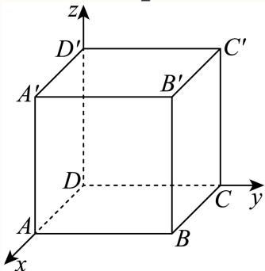
关键点睛：本题解题的关键是建立坐标系利用坐标计算得 P M → ⋅ P N → ≥ − 1 4 ∣ M N → ∣ 2 \overrightarrow { P M } \cdot \overrightarrow { P N } \geq - \frac { 1 } { 4 } \left| \overrightarrow { M N } \right| ^ { 2 } PM ⋅ PN ≥ − 4 1 MN 2
二、选择题
青浦 · 第14题 ★☆☆☆☆ · 教师预估 本题资料或解析有待核事项，预览不可作为已审定成品。
若点 P ( x , y , z ) ( x y z ≠ 0 ) P \left( x , y , z \right) \left( x y z \neq 0 \right) P ( x , y , z ) ( x yz = 0 )
A. 关 F X Oz − \operatorname { \mathbb { F } } _ { \mathbf { X } } \operatorname { O z } ^ { \mathrm { - } } F X Oz −
B. 关于x轴对称
C. 关于y轴对称
D. 关于坐标原点对称
考点： 空间坐标轴平面对称；空间点的坐标与中心对称。难度依据： 坐标变号两次比较即可
核查说明： 题干与解析已用于人工归类，尚未完成整题公式校净与独立数学终审。
展开答案与解析 【答案】D
【解析】
运用空间向量坐标表示以及对称中的坐标特点可解.
点 P ( x , y , z ) ( x y z ≠ 0 ) P \left( x , y , z \right) \left( x y z \neq 0 \right) P ( x , y , z ) ( x yz = 0 ) ( x , y , − z ) ( x , y , - z ) ( x , y , − z )
点 P ( x , y , z ) ( x y z ≠ 0 ) P \left( x , y , z \right) \left( x y z \neq 0 \right) P ( x , y , z ) ( x yz = 0 ) ( − x , − y , z ) ( - x , - y , z ) ( − x , − y , z )
则根据坐标特点知道A、B两点关于原点对称.
故选：D
黄浦 · 第8题 ★★★☆☆ · 教师预估 在正四面体 A B C D A B C D A BC D △ A B C \triangle A B C △ A BC D N → = λ D A → + μ D B → + ν B C → ( λ , μ , ν ∈ R ) \overrightarrow { D N } = \lambda \overrightarrow { D A } + \mu \overrightarrow { D B } + \nu \overrightarrow { B C } \left( \lambda , \mu , \nu \in \mathbf { R } \right) D N = λ D A + μ D B + ν BC ( λ , μ , ν ∈ R ) λ + μ + ν = \lambda + \mu + \nu = λ + μ + ν =
考点： 由重心表示与向量基底求系数。难度依据： 正四面体中心的空间向量表示；由重心表示与向量基底求系数
展开答案与解析 【答案】4 3 . { \frac { 4 } { 3 } } . 3 4 .
【解析】
依题意设 O A = a , O B = b , O C = c O A = a , O B = b , O C = c O A = a , OB = b , OC = c a = b = c a = b = c a = b = c 2 , { \sqrt { 2 } } , 2 , D N → = λ D A → + μ D B → + ν B C → \overrightarrow { D N } = \lambda \overrightarrow { D A } + \mu \overrightarrow { D B } + \nu \overrightarrow { B C } D N = λ D A + μ D B + ν BC
因为在正四面体 A B C D L Σ A B C D \ L \mathrm { \Sigma } A BC D L Σ A B = B C = C A A B = B C = C A A B = BC = C A O x , O y , O z ⊥ O x , O y , O z \bot O x , O y , O z ⊥
设 O A = a , O B = b , O C = c , O A = a , O B = b , O C = c , O A = a , OB = b , OC = c ,
由 O A , O B , O C O A , O B , O C O A , OB , OC a 2 + b 2 = b 2 + c 2 = c 2 + a 2 a ^ { 2 } + b ^ { 2 } = b ^ { 2 } + c ^ { 2 } = c ^ { 2 } + a ^ { 2 } a 2 + b 2 = b 2 + c 2 = c 2 + a 2
所以 a = b = c , a = b = c , a = b = c , ∣ O A = O B = O C , \begin{array} { r } { | O A = O B = O C , } \end{array} ∣ O A = OB = OC , O − A B C O - A B C O − A BC
设该正四面体的棱长为 ⋅ ‾ 2 , { \overline { { \cdot } } } \sqrt { 2 } , ⋅ 2 , a = b = c = 1 a = b = c = 1 a = b = c = 1 A ( 1 , 0 , 0 ) , B ( 0 , 1 , 0 ) , C ( 0 , 0 , 1 ) , D ( 1 , 1 , 1 ) A ( 1 , 0 , 0 ) , B ( 0 , 1 , 0 ) , C ( 0 , 0 , 1 ) , D ( 1 , 1 , 1 ) A ( 1 , 0 , 0 ) , B ( 0 , 1 , 0 ) , C ( 0 , 0 , 1 ) , D ( 1 , 1 , 1 )
又点N是 △ A B C \triangle A B C △ A BC N = ( 1 3 , 1 3 , 1 3 ) N = \left( \frac { 1 } { 3 } , \frac { 1 } { 3 } , \frac { 1 } { 3 } \right) N = ( 3 1 , 3 1 , 3 1 )
所以 D N → = ( − 2 3 , − 2 3 , − 2 3 ) , D A → = ( 0 , − 1 , − 1 ) , D B → = ( − 1 , 0 , − 1 ) , B C → = ( 0 , − 1 , 1 ) \overrightarrow { D N } = \left( - \frac { 2 } { 3 } , - \frac { 2 } { 3 } , - \frac { 2 } { 3 } \right) , \overrightarrow { D A } = ( 0 , - 1 , - 1 ) , \overrightarrow { D B } = ( - 1 , 0 , - 1 ) , \overrightarrow { B C } = ( 0 , - 1 , 1 ) D N = ( − 3 2 , − 3 2 , − 3 2 ) , D A = ( 0 , − 1 , − 1 ) , D B = ( − 1 , 0 , − 1 ) , BC = ( 0 , − 1 , 1 )
因为 ∣ D N → = λ D A → + μ D B → + ν B C → \overrightarrow { ^ { \vert D N } } = \lambda \overrightarrow { D A } + \mu \overrightarrow { D B } + \nu \overrightarrow { B C } ∣ D N = λ D A + μ D B + ν BC
( − 2 3 , − 2 3 , − 2 3 ) = λ ( 0 , − 1 , − 1 ) + μ ( − 1 , 0 , − 1 ) + ν ( 0 , − 1 , 1 ) ,
\left(- \frac {2}{3}, - \frac {2}{3}, - \frac {2}{3}\right) = \lambda (0, - 1, - 1) + \mu (- 1, 0, - 1) + \nu (0, - 1, 1),
( − 3 2 , − 3 2 , − 3 2 ) = λ ( 0 , − 1 , − 1 ) + μ ( − 1 , 0 , − 1 ) + ν ( 0 , − 1 , 1 ) ,
可得 { − 2 3 = − μ − 2 3 = − λ − ν − 2 3 = − λ − μ + ν , \left\{ \begin{array} { l l } { - { \displaystyle \frac { 2 } { 3 } } = - \mu } \\ { - { \displaystyle \frac { 2 } { 3 } } = - \lambda - \nu } \\ { - { \displaystyle \frac { 2 } { 3 } } = - \lambda - \mu + \nu } \end{array} \right. , ⎩ ⎨ ⎧ − 3 2 = − μ − 3 2 = − λ − ν − 3 2 = − λ − μ + ν , { μ = 2 3 ν = 1 3 , λ = 1 3 \left\{ \begin{array} { l l } { \displaystyle \mu = \frac { 2 } { 3 } } \\ { \displaystyle \nu = \frac { 1 } { 3 } , } \\ { \displaystyle \lambda = \frac { 1 } { 3 } } \end{array} \right. ⎩ ⎨ ⎧ μ = 3 2 ν = 3 1 , λ = 3 1
可得 λ + μ + ν = 4 3 \lambda + \mu + \nu = { \frac { 4 } { 3 } } λ + μ + ν = 3 4
故答案为： 4 3 . { \frac { 4 } { 3 } } . 3 4 .